The purpose of my research is to analyze the impact of height on a goaltenders performance in the NHL. In particular:
Have goalies in the NHL been getting shorter, taller, or no trend? Does this differ by country of origin?
Do taller goalies in the NHL have more success (i.e. better SV% and GAA) than shorter goalies?
# Load libraries
library(tidyverse)
library(cowplot)
library(ggcorrplot)
library(kableExtra)# Load data extracted from the NHL APIs (extraction done in separate file)
goalies = read_csv("../data/nhl_goalies_data.csv")## Rows: 2256 Columns: 34
## ── Column specification ────────────────────────────────────
## Delimiter: ","
## chr (9): birthCity, birthCountryCode, birthStateProvinceCode, fullName, is...
## dbl (24): draftOverall, draftRound, draftYear, height, playerId, weight, se...
## date (1): birthDate
##
## ℹ Use `spec()` to retrieve the full column specification for this data.
## ℹ Specify the column types or set `show_col_types = FALSE` to quiet this message.prospects = read_csv("../data/nhl_goalie_prospects_data.csv")## Rows: 869 Columns: 15
## ── Column specification ────────────────────────────────────
## Delimiter: ","
## chr (8): positionCode, catches, lastAmateurClub, lastAmateurLeague, birthCi...
## dbl (5): height, weight, midtermRank, finalRank, draftYear
## lgl (1): international
## date (1): birthDate
##
## ℹ Use `spec()` to retrieve the full column specification for this data.
## ℹ Specify the column types or set `show_col_types = FALSE` to quiet this message.# Check for import issues with NHL goalies data
dim(goalies)## [1] 2256 34head(goalies)## # A tibble: 6 × 34
## birthCity birthCountryCode birthDate birthStateProvinceCode draftOverall
## <chr> <chr> <date> <chr> <dbl>
## 1 Belleville CAN 1980-05-04 ON 135
## 2 Riga LVA 1967-02-02 <NA> 196
## 3 Toronto CAN 1965-01-14 ON 69
## 4 Farmington USA 1977-03-12 MI 129
## 5 Woonsocket USA 1977-01-02 RI 22
## 6 Sussex GBR 1971-02-25 <NA> 35
## # ℹ 29 more variables: draftRound <dbl>, draftYear <dbl>, fullName <chr>,
## # height <dbl>, isInHallOfFameYn <chr>, lastName <chr>,
## # nationalityCode <chr>, playerId <dbl>, catches <chr>, weight <dbl>,
## # seasonId <dbl>, assists <dbl>, gamesPlayed <dbl>, gamesStarted <dbl>,
## # goals <dbl>, goalsAgainst <dbl>, goalsAgainstAverage <dbl>, losses <dbl>,
## # otLosses <dbl>, penaltyMinutes <dbl>, points <dbl>, savePct <dbl>,
## # saves <dbl>, shotsAgainst <dbl>, shutouts <dbl>, teamAbbrevs <chr>, …tail(goalies)## # A tibble: 6 × 34
## birthCity birthCountryCode birthDate birthStateProvinceCode draftOverall
## <chr> <chr> <date> <chr> <dbl>
## 1 Surrey CAN 1995-04-29 BC 44
## 2 Espoo FIN 1999-03-09 <NA> 54
## 3 Helsinki FIN 1995-02-06 <NA> 94
## 4 Havlickuv Brod CZE 1996-01-09 <NA> 39
## 5 Dollard-des-O… CAN 2000-03-04 QC NA
## 6 Omsk RUS 2002-06-16 <NA> 11
## # ℹ 29 more variables: draftRound <dbl>, draftYear <dbl>, fullName <chr>,
## # height <dbl>, isInHallOfFameYn <chr>, lastName <chr>,
## # nationalityCode <chr>, playerId <dbl>, catches <chr>, weight <dbl>,
## # seasonId <dbl>, assists <dbl>, gamesPlayed <dbl>, gamesStarted <dbl>,
## # goals <dbl>, goalsAgainst <dbl>, goalsAgainstAverage <dbl>, losses <dbl>,
## # otLosses <dbl>, penaltyMinutes <dbl>, points <dbl>, savePct <dbl>,
## # saves <dbl>, shotsAgainst <dbl>, shutouts <dbl>, teamAbbrevs <chr>, …# Check for import issues with NHL goalie prospects data
dim(prospects)## [1] 869 15head(prospects)## # A tibble: 6 × 15
## positionCode catches height weight lastAmateurClub lastAmateurLeague
## <chr> <chr> <dbl> <dbl> <chr> <chr>
## 1 G L 78 196 Brynas Jr. SWEDEN-JR.
## 2 G L 74 220 Guelph OHL
## 3 G L 74 215 Tri-City WHL
## 4 G L 73 202 Tappara FINLAND
## 5 G L 74 185 Lewiston QMJHL
## 6 G L 78 220 Brynas SWEDEN
## # ℹ 9 more variables: birthDate <date>, birthCity <chr>,
## # birthStateProvince <chr>, birthCountryCode <chr>, midtermRank <dbl>,
## # finalRank <dbl>, draftYear <dbl>, international <lgl>, fullName <chr>tail(prospects)## # A tibble: 6 × 15
## positionCode catches height weight lastAmateurClub lastAmateurLeague
## <chr> <chr> <dbl> <dbl> <chr> <chr>
## 1 G L 74 172 BURLINGTON OJHL
## 2 G L 73 185 USA U-18 NTDP - USHL
## 3 G R 72 176 WATERLOO USHL
## 4 G L 74 172 BRUNSWICK PREP HIGH-CT
## 5 G L 74 180 BRANTFORD OHL
## 6 G L 76 182 RIMOUSKI QMJHL
## # ℹ 9 more variables: birthDate <date>, birthCity <chr>,
## # birthStateProvince <chr>, birthCountryCode <chr>, midtermRank <dbl>,
## # finalRank <dbl>, draftYear <dbl>, international <lgl>, fullName <chr>Integer columns are being imported as doubles so I will explicitly set the types for these columns. We could also convert some of the character columns to factors. There doesn’t appear to be any import errors otherwise. We have 2256 rows across 34 variables for the NHL goalies by season data and 869 rows across 15 variables for the NHL goalie prospects by draft year data.
# Convert the invalid double columns in the goalies data to integers and create some factors
goalies = goalies |>
mutate(
across(
c(seasonId, playerId, height, weight, draftYear, draftRound, draftOverall, assists,
gamesPlayed, gamesStarted, goals, goalsAgainst, losses, otLosses, penaltyMinutes,
points, saves, shotsAgainst, shutouts, ties, timeOnIce, wins),
as.integer
),
across(
c(birthCountryCode, isInHallOfFameYn, catches),
as.factor
)
)# Convert the invalid double columns in the prospects data to integers and create some factors
prospects = prospects |>
mutate(
across(
c(draftYear, height, weight, midtermRank, finalRank),
as.integer
),
across(
c(positionCode, catches, birthCountryCode),
as.factor
)
)# Check the variable types in the goalies data
str(goalies)## tibble [2,256 × 34] (S3: tbl_df/tbl/data.frame)
## $ birthCity : chr [1:2256] "Belleville" "Riga" "Toronto" "Farmington" ...
## $ birthCountryCode : Factor w/ 19 levels "AUT","BGR","BLR",..: 4 14 4 18 18 11 4 4 18 4 ...
## $ birthDate : Date[1:2256], format: "1980-05-04" "1967-02-02" ...
## $ birthStateProvinceCode: chr [1:2256] "ON" NA "ON" "MI" ...
## $ draftOverall : int [1:2256] 135 196 69 129 22 35 122 54 85 169 ...
## $ draftRound : int [1:2256] 5 10 4 5 1 2 5 3 5 8 ...
## $ draftYear : int [1:2256] 1998 1989 1983 1995 1995 1989 1995 1991 1983 1991 ...
## $ fullName : chr [1:2256] "Andrew Raycroft" "Arturs Irbe" "Bob Essensa" "Brent Johnson" ...
## $ height : int [1:2256] 73 68 72 75 74 71 72 70 69 70 ...
## $ isInHallOfFameYn : Factor w/ 2 levels "N","Y": 1 1 1 1 1 1 1 1 1 1 ...
## $ lastName : chr [1:2256] "Raycroft" "Irbe" "Essensa" "Johnson" ...
## $ nationalityCode : chr [1:2256] "CAN" "LVA" "CAN" "USA" ...
## $ playerId : int [1:2256] 8467453 8456692 8446719 8462161 8462052 8455994 8462152 8458568 8451860 8458680 ...
## $ catches : Factor w/ 2 levels "L","R": 1 1 1 1 1 1 1 1 1 1 ...
## $ weight : int [1:2256] 180 190 188 199 200 185 198 180 170 170 ...
## $ seasonId : int [1:2256] 20002001 20002001 20002001 20002001 20002001 20002001 20002001 20002001 20002001 20002001 ...
## $ assists : int [1:2256] 0 2 0 0 0 2 0 0 0 0 ...
## $ gamesPlayed : int [1:2256] 15 83 41 33 28 45 1 58 18 1 ...
## $ gamesStarted : int [1:2256] 11 82 35 30 24 45 1 54 13 0 ...
## $ goals : int [1:2256] 0 0 0 0 0 0 0 0 0 0 ...
## $ goalsAgainst : int [1:2256] 32 200 98 65 83 101 2 142 39 0 ...
## $ goalsAgainstAverage : num [1:2256] 2.96 2.52 2.7 2.16 3.31 ...
## $ losses : int [1:2256] 6 33 14 10 12 14 1 23 9 0 ...
## $ otLosses : int [1:2256] NA NA NA NA NA NA NA NA NA NA ...
## $ penaltyMinutes : int [1:2256] 0 10 4 2 2 6 0 8 2 0 ...
## $ points : int [1:2256] 0 2 0 0 0 2 0 0 0 0 ...
## $ savePct : num [1:2256] 0.89 0.907 0.893 0.909 0.874 ...
## $ saves : int [1:2256] 259 1948 814 647 578 975 18 1326 333 8 ...
## $ shotsAgainst : int [1:2256] 291 2148 912 712 661 1076 20 1468 372 8 ...
## $ shutouts : int [1:2256] 0 6 1 4 1 2 0 2 0 0 ...
## $ teamAbbrevs : chr [1:2256] "BOS" "CAR" "VAN" "STL" ...
## $ ties : int [1:2256] 0 9 3 2 5 7 0 4 2 0 ...
## $ timeOnIce : int [1:2256] 38918 285923 130849 108350 90373 152188 3515 191941 53761 1200 ...
## $ wins : int [1:2256] 4 39 18 19 8 22 0 27 4 1 ...# Check OT losses column
summary(goalies$otLosses)## Min. 1st Qu. Median Mean 3rd Qu. Max. NA's
## 0.000 0.000 2.000 2.912 5.000 14.000 389# Check the variable types in the prospects data
str(prospects)## tibble [869 × 15] (S3: tbl_df/tbl/data.frame)
## $ positionCode : Factor w/ 1 level "G": 1 1 1 1 1 1 1 1 1 1 ...
## $ catches : Factor w/ 2 levels "L","R": 1 1 1 1 1 1 1 2 1 1 ...
## $ height : int [1:869] 78 74 74 73 74 78 73 74 74 74 ...
## $ weight : int [1:869] 196 220 215 202 185 220 200 183 190 186 ...
## $ lastAmateurClub : chr [1:869] "Brynas Jr." "Guelph" "Tri-City" "Tappara" ...
## $ lastAmateurLeague : chr [1:869] "SWEDEN-JR." "OHL" "WHL" "FINLAND" ...
## $ birthDate : Date[1:869], format: "1990-01-31" "1989-12-07" ...
## $ birthCity : chr [1:869] "Gavle" "Amherst" "Moncton" "Toijala" ...
## $ birthStateProvince: chr [1:869] NA "NY" "NB" NA ...
## $ birthCountryCode : Factor w/ 18 levels "BEL","BLR","CAN",..: 17 18 3 9 3 17 3 3 14 3 ...
## $ midtermRank : int [1:869] 2 3 1 NA 2 NA 9 18 NA NA ...
## $ finalRank : int [1:869] 1 1 2 2 3 3 4 5 5 6 ...
## $ draftYear : int [1:869] 2008 2008 2008 2008 2008 2008 2008 2008 2008 2008 ...
## $ international : logi [1:869] TRUE FALSE FALSE TRUE FALSE TRUE ...
## $ fullName : chr [1:869] "Jacob Markstrom" "Thomas McCollum" "Chet Pickard" "Harri Sateri" ...We fixed issues with integers being cast as doubles. There appear to be a lot of NA’s in OT losses column for goalies but that’s okay since we won’t use it anyways. There don’t appear to be any other major issues at the surface level other than that.
# Create column for checking whether a goalie was drafted or not
goalies = goalies |>
mutate(
drafted = !is.na(draftYear)
)
class(goalies$drafted)## [1] "logical"table(goalies$drafted)##
## FALSE TRUE
## 377 1879# Create column for goalie age as of the beginning of the season (i.e. September 15th as per NHL Hockey Operations Guidelines)
goalies = goalies |>
separate(seasonId, into = c("seasonStartYear", "seasonEndYear"), sep = 4,
convert = T, remove = F) |>
mutate(
ageAtSeasonStart = as.integer(
interval(birthDate, date(paste0(seasonStartYear, "-09-15"))) / years()
)
)
class(goalies$ageAtSeasonStart)## [1] "integer"summary(goalies$ageAtSeasonStart)## Min. 1st Qu. Median Mean 3rd Qu. Max.
## 18.00 24.00 27.00 27.56 31.00 42.00# Get the average goalie height minus 2 inches for every season
undersize_heights_per_season = goalies |>
group_by(seasonId) |>
summarize(
undersize_threshold = mean(height) - 2
) |>
ungroup()
# Create column classifying a goalie as undersized or not (i.e. <= 2" below average)
goalies = goalies |>
left_join(undersize_heights_per_season, by = "seasonId") |>
mutate(
undersized = height <= undersize_threshold
)
# View the effective threshold for being undersized each season
goalies |>
filter(undersized) |>
group_by(seasonId) |>
summarize(
effective_undersize_threshold = max(height)
)## # A tibble: 24 × 2
## seasonId effective_undersize_threshold
## <int> <int>
## 1 20002001 70
## 2 20012002 70
## 3 20022003 70
## 4 20032004 71
## 5 20052006 71
## 6 20062007 71
## 7 20072008 71
## 8 20082009 71
## 9 20092010 71
## 10 20102011 71
## # ℹ 14 more rowsclass(goalies$undersized)## [1] "logical"table(goalies$undersized)##
## FALSE TRUE
## 1940 316# Order goalies columns to view most important columns first
goalies = goalies |>
relocate(
seasonId, playerId, fullName, birthCountryCode, height, gamesPlayed, wins,
savePct, goalsAgainstAverage, shotsAgainst, saves, goalsAgainst
)# Create column for prospect age as of the start of the next season (i.e. September 15th as per NHL Hockey Operations Guidelines)
prospects = prospects |>
mutate(
draftYearAge = as.integer(
interval(birthDate, date(paste0(draftYear, "-09-15"))) / years()
)
)
class(prospects$draftYearAge)## [1] "integer"summary(prospects$draftYearAge)## Min. 1st Qu. Median Mean 3rd Qu. Max.
## 18.00 18.00 18.00 18.38 19.00 21.00# Order prospects columns to view most important columns first
prospects = prospects |>
relocate(
draftYear, fullName, birthCountryCode, international, height, midtermRank, finalRank
)Adding the extra variables will help check the validity of the data with respect to draft years, birth dates, and height classification.
# Summarize the goalies data
summary(goalies)## seasonId playerId fullName birthCountryCode
## Min. :20002001 Min. :8445275 Length:2256 CAN :987
## 1st Qu.:20072008 1st Qu.:8467453 Class :character USA :442
## Median :20132014 Median :8471679 Mode :character FIN :208
## Mean :20128246 Mean :8470700 SWE :183
## 3rd Qu.:20192020 3rd Qu.:8476343 CZE :121
## Max. :20242025 Max. :8484312 RUS :108
## (Other):207
## height gamesPlayed wins savePct
## Min. :67.00 Min. : 1.00 Min. : 0.00 Min. :0.5000
## 1st Qu.:73.00 1st Qu.: 7.00 1st Qu.: 2.00 1st Qu.:0.8930
## Median :74.00 Median :25.00 Median :10.00 Median :0.9069
## Mean :73.93 Mean :29.25 Mean :13.32 Mean :0.9010
## 3rd Qu.:75.00 3rd Qu.:47.00 3rd Qu.:21.00 3rd Qu.:0.9169
## Max. :79.00 Max. :97.00 Max. :57.00 Max. :1.0000
## NA's :7
## goalsAgainstAverage shotsAgainst saves goalsAgainst
## Min. : 0.000 Min. : 0.0 Min. : 0.0 Min. : 0.00
## 1st Qu.: 2.420 1st Qu.: 178.0 1st Qu.: 160.5 1st Qu.: 18.00
## Median : 2.766 Median : 658.5 Median : 593.0 Median : 63.00
## Mean : 2.882 Mean : 810.4 Mean : 737.0 Mean : 73.38
## 3rd Qu.: 3.177 3rd Qu.:1311.5 3rd Qu.:1190.2 3rd Qu.:120.00
## Max. :27.273 Max. :2668.0 Max. :2497.0 Max. :234.00
##
## birthCity birthDate birthStateProvinceCode
## Length:2256 Min. :1962-08-23 Length:2256
## Class :character 1st Qu.:1978-05-24 Class :character
## Mode :character Median :1986-01-21 Mode :character
## Mean :1985-04-20
## 3rd Qu.:1992-02-14
## Max. :2004-03-14
##
## draftOverall draftRound draftYear isInHallOfFameYn
## Min. : 1.00 Min. : 1.00 Min. :1981 N:2190
## 1st Qu.: 37.00 1st Qu.: 2.00 1st Qu.:1997 Y: 66
## Median : 77.00 Median : 3.00 Median :2004
## Mean : 95.49 Mean : 3.79 Mean :2003
## 3rd Qu.:141.00 3rd Qu.: 5.00 3rd Qu.:2010
## Max. :291.00 Max. :11.00 Max. :2022
## NA's :377 NA's :377 NA's :377
## lastName nationalityCode catches weight seasonStartYear
## Length:2256 Length:2256 L:2080 Min. :146.0 Min. :2000
## Class :character Class :character R: 176 1st Qu.:188.0 1st Qu.:2007
## Mode :character Mode :character Median :200.0 Median :2013
## Mean :199.5 Mean :2013
## 3rd Qu.:210.0 3rd Qu.:2019
## Max. :250.0 Max. :2024
##
## seasonEndYear assists gamesStarted goals
## Min. :2001 Min. :0.0000 Min. : 0.0 Min. :0.000000
## 1st Qu.:2008 1st Qu.:0.0000 1st Qu.: 6.0 1st Qu.:0.000000
## Median :2014 Median :0.0000 Median :22.0 Median :0.000000
## Mean :2014 Mean :0.6028 Mean :27.2 Mean :0.005762
## 3rd Qu.:2020 3rd Qu.:1.0000 3rd Qu.:44.0 3rd Qu.:0.000000
## Max. :2025 Max. :8.0000 Max. :97.0 Max. :1.000000
##
## losses otLosses penaltyMinutes points
## Min. : 0.00 Min. : 0.000 Min. : 0.000 Min. :0.0000
## 1st Qu.: 3.00 1st Qu.: 0.000 1st Qu.: 0.000 1st Qu.:0.0000
## Median : 9.00 Median : 2.000 Median : 0.000 Median :0.0000
## Mean :10.91 Mean : 2.912 Mean : 2.408 Mean :0.6086
## 3rd Qu.:17.00 3rd Qu.: 5.000 3rd Qu.: 2.000 3rd Qu.:1.0000
## Max. :42.00 Max. :14.000 Max. :39.000 Max. :8.0000
## NA's :389
## shutouts teamAbbrevs ties timeOnIce
## Min. : 0.000 Length:2256 Min. : 0.000 Min. : 8
## 1st Qu.: 0.000 Class :character 1st Qu.: 0.000 1st Qu.: 21650
## Median : 1.000 Mode :character Median : 2.000 Median : 80926
## Mean : 1.737 Mean : 3.385 Mean : 98797
## 3rd Qu.: 3.000 3rd Qu.: 6.000 3rd Qu.:157964
## Max. :16.000 Max. :14.000 Max. :351895
## NA's :1885
## drafted ageAtSeasonStart undersize_threshold undersized
## Mode :logical Min. :18.00 Min. :70.41 Mode :logical
## FALSE:377 1st Qu.:24.00 1st Qu.:71.26 FALSE:1940
## TRUE :1879 Median :27.00 Median :72.17 TRUE :316
## Mean :27.56 Mean :71.93
## 3rd Qu.:31.00 3rd Qu.:72.57
## Max. :42.00 Max. :73.03
## It appears most variables in the goalies data have reasonable values, although there are some potential issues (i.e. with height, time on ice, and save percentage):
The age range of 18-42 years old makes sense given that NHL players need to be at least 18 years old and many stop playing before their forties (although some do - the oldest active NHL goalie is 40).
The heights of goalies ranges from 67-79 inches or 5’7”-6’7”. This is a reasonable range, although I will have to confirm 5’7” is accurate given this is considered extremely undersized for an NHL goalie.
There are 377 NA’s in each of the draft variables. This makes
sense given that you can make the NHL without being selected in the NHL
Entry Draft (although it is definitely more rare). For further comfort,
each of draftYear, draftRound, and
draftOverall have exactly the same number of NA’s which is
a good sign that drafted is encoded properly since being
undrafted means all 3 of these variables should be empty.
The maximum number of games that can be played in a single season (including regular season and playoffs) is 110 so the range of 1-97 for games played and 0-57 for wins makes sense, further validating the data.
Goals against average (GAA) appears to have a reasonable range, although there is definitely a point of interest with the value 27.273 (this is extremely high, although possible due to how GAA is calculated).
Time on ice (measured in seconds) indicates that someone only played 8 seconds in an entire season. This likely indicates an emergency backup situation or something similar and thus, needs investigation.
Save percentage (SV%) has 7 missing values. This could indicate a goalie who faced 0 shots, likely indicating an emergency backup situation. This also needs further investigation.
# Investigate 5'7" goalie (and other goalies under 5'10" = 70")
goalies |>
filter(height < 70) |>
select(seasonId, fullName, height) |>
arrange(height, fullName, seasonId)## # A tibble: 27 × 3
## seasonId fullName height
## <int> <chr> <int>
## 1 20002001 Fred Brathwaite 67
## 2 20012002 Fred Brathwaite 67
## 3 20022003 Fred Brathwaite 67
## 4 20032004 Fred Brathwaite 67
## 5 20112012 Shawn Hunwick 67
## 6 20002001 Arturs Irbe 68
## 7 20012002 Arturs Irbe 68
## 8 20022003 Arturs Irbe 68
## 9 20032004 Arturs Irbe 68
## 10 20002001 Glenn Healy 68
## # ℹ 17 more rowsAfter verifying these goalies with external sources, all of their heights are valid.
# Investigate missing save percentages
goalies |>
filter(is.na(savePct)) |>
relocate(seasonId, fullName, savePct, shotsAgainst, timeOnIce) |>
arrange(seasonId, fullName)## # A tibble: 7 × 40
## seasonId fullName savePct shotsAgainst timeOnIce playerId birthCountryCode
## <int> <chr> <dbl> <int> <int> <int> <fct>
## 1 20002001 Evgeny Kons… NA 0 24 8467940 RUS
## 2 20052006 Jordan Siga… NA 0 43 8469653 CAN
## 3 20052006 Robert McVi… NA 0 164 8469750 CAN
## 4 20112012 Jake Allen NA 0 67 8474596 CAN
## 5 20112012 Shawn Hunwi… NA 0 153 8476803 USA
## 6 20162017 Jorge Alves NA 0 8 8479115 USA
## 7 20222023 Jett Alexan… NA 0 70 8483183 CAN
## # ℹ 33 more variables: height <int>, gamesPlayed <int>, wins <int>,
## # goalsAgainstAverage <dbl>, saves <int>, goalsAgainst <int>,
## # birthCity <chr>, birthDate <date>, birthStateProvinceCode <chr>,
## # draftOverall <int>, draftRound <int>, draftYear <int>,
## # isInHallOfFameYn <fct>, lastName <chr>, nationalityCode <chr>,
## # catches <fct>, weight <int>, seasonStartYear <int>, seasonEndYear <int>,
## # assists <int>, gamesStarted <int>, goals <int>, losses <int>, …After investigating the 7 observations with missing save percentages, I found the following:
Evgeny Konstantinov was a goalie drafted by Tampa Bay but only appeared in 2 NHL games throughout his career. There is no indication, however, that this was an emergency backup situation.
Jordan Sigalet was a professional goalie whose career was cut short due to his battle with MS. He played many games in the AHL, indicating his one game in the NHL was due to skill rather than an emergency scenerio.
Robert McVicar was a professional goalie who was called up a dozen or so times during the 2005-2006 season. While he never faced a shot, he was on the team based off merit.
Jake Allen is a current goalie in the NHL and has been for over a decade.
Shawn Hunwick was an emergency backup for a couple of days in 2012 when Columbus was facing sudden injury problems (hence the 2:33 of ice time).
Jorge Alves was an equipment manager for Carolina and also backed up for one game due to emergency injury trouble.
Jett Alexander was an emergency backup for one game with Toronto due to injury troubles on the team. The coach put him in for the last 70 seconds of a game they were winning 7-1. As a fun aside, I played with Jett that year and was in the stands for this game as an emergency backup.
I don’t want to keep goalies in the data that only played once and never again due to emergency scenerios. This is because in emergency situations teams usually grab the goalie who is most available, rather than picking a goalie from their system or farm team that is the next best in line. Keeping these observations would take away from the quality of my analysis so my objective is to rid them where possible. Therefore, I will remove the 3 observations deemed as emergency backups. It should be noted that there are only 6 times an emergency backup has played, so I will manually identify and remove the rest of these observations as well.
# Find emergency situation goalies
emergency_goalies = goalies |>
filter (fullName %in% c("Shawn Hunwick", "Jorge Alves", "Jett Alexander",
"Thomas Hodges", "Matthew Berlin", "Scott Foster"))
emergency_goalies## # A tibble: 6 × 40
## seasonId playerId fullName birthCountryCode height gamesPlayed wins savePct
## <int> <int> <chr> <fct> <int> <int> <int> <dbl>
## 1 20112012 8476803 Shawn Hun… USA 67 1 0 NA
## 2 20162017 8479115 Jorge Alv… USA 69 1 0 NA
## 3 20172018 8479138 Scott Fos… CAN 72 1 0 1
## 4 20212022 8480591 Thomas Ho… GBR 70 1 0 0.667
## 5 20222023 8483183 Jett Alex… CAN 77 1 0 NA
## 6 20222023 8483158 Matthew B… CAN 75 1 0 1
## # ℹ 32 more variables: goalsAgainstAverage <dbl>, shotsAgainst <int>,
## # saves <int>, goalsAgainst <int>, birthCity <chr>, birthDate <date>,
## # birthStateProvinceCode <chr>, draftOverall <int>, draftRound <int>,
## # draftYear <int>, isInHallOfFameYn <fct>, lastName <chr>,
## # nationalityCode <chr>, catches <fct>, weight <int>, seasonStartYear <int>,
## # seasonEndYear <int>, assists <int>, gamesStarted <int>, goals <int>,
## # losses <int>, otLosses <int>, penaltyMinutes <int>, points <int>, …# Remove emergency goalies from data
goalies = goalies |>
anti_join(emergency_goalies, by = "playerId")
nrow(goalies)## [1] 2250# Investigate limited time on ice
summary(goalies$timeOnIce)## Min. 1st Qu. Median Mean 3rd Qu. Max.
## 24 21832 81109 99060 158218 351895# Investigate the goalies who played less than a minute
goalies |>
filter(timeOnIce < 60)## # A tibble: 2 × 40
## seasonId playerId fullName birthCountryCode height gamesPlayed wins savePct
## <int> <int> <chr> <fct> <int> <int> <int> <dbl>
## 1 20002001 8467940 Evgeny Ko… RUS 72 1 0 NA
## 2 20052006 8469653 Jordan Si… CAN 73 1 0 NA
## # ℹ 32 more variables: goalsAgainstAverage <dbl>, shotsAgainst <int>,
## # saves <int>, goalsAgainst <int>, birthCity <chr>, birthDate <date>,
## # birthStateProvinceCode <chr>, draftOverall <int>, draftRound <int>,
## # draftYear <int>, isInHallOfFameYn <fct>, lastName <chr>,
## # nationalityCode <chr>, catches <fct>, weight <int>, seasonStartYear <int>,
## # seasonEndYear <int>, assists <int>, gamesStarted <int>, goals <int>,
## # losses <int>, otLosses <int>, penaltyMinutes <int>, points <int>, …We have already discussed these goalies. Since we already removed goalies who played due to emergency circumstances, there is no further action needed.
# Summarize prospects data
summary(prospects)## draftYear fullName birthCountryCode international
## Min. :2008 Length:869 CAN :366 Mode :logical
## 1st Qu.:2013 Class :character USA :198 FALSE:640
## Median :2017 Mode :character SWE : 64 TRUE :229
## Mean :2017 CZE : 57
## 3rd Qu.:2021 FIN : 56
## Max. :2025 RUS : 47
## (Other): 81
## height midtermRank finalRank positionCode catches
## Min. :67.0 Min. : 1.00 Min. : 1.00 G:869 L:799
## 1st Qu.:73.0 1st Qu.: 6.00 1st Qu.: 6.00 R: 70
## Median :74.0 Median : 12.00 Median :11.00
## Mean :74.1 Mean : 15.28 Mean :13.45
## 3rd Qu.:75.0 3rd Qu.: 21.25 3rd Qu.:21.00
## Max. :80.0 Max. :999.00 Max. :35.00
## NA's :173 NA's :162
## weight lastAmateurClub lastAmateurLeague birthDate
## Min. :150.0 Length:869 Length:869 Min. :1988-01-05
## 1st Qu.:180.0 Class :character Class :character 1st Qu.:1994-06-22
## Median :190.0 Mode :character Mode :character Median :1998-10-29
## Mean :190.6 Mean :1998-10-01
## 3rd Qu.:200.0 3rd Qu.:2002-12-20
## Max. :248.0 Max. :2007-09-10
##
## birthCity birthStateProvince draftYearAge
## Length:869 Length:869 Min. :18.00
## Class :character Class :character 1st Qu.:18.00
## Mode :character Mode :character Median :18.00
## Mean :18.38
## 3rd Qu.:19.00
## Max. :21.00
## # Compare number of NAs in final rankings to number of 2025 prospects
prospects |>
filter(draftYear == 2025) |>
mutate(total = n()) |>
select(total, draftYear, midtermRank, finalRank) |>
summary()## total draftYear midtermRank finalRank
## Min. :48 Min. :2025 Min. : 1.00 Min. : NA
## 1st Qu.:48 1st Qu.:2025 1st Qu.: 6.75 1st Qu.: NA
## Median :48 Median :2025 Median :12.50 Median : NA
## Mean :48 Mean :2025 Mean :13.83 Mean :NaN
## 3rd Qu.:48 3rd Qu.:2025 3rd Qu.:20.25 3rd Qu.: NA
## Max. :48 Max. :2025 Max. :32.00 Max. : NA
## NA's :48It appears most variables in the prospects data have reasonable values, although there might be an issue with midterm rank. Notable thoughts are as follows:
Draft year has the correct range from 2008 to 2025 as these are the only years available from the API.
The heights of prospects are reasonable, ranging from 67 to 80 inches (5’7” to 6’8”).
Prospects eligible for the NHL Entry Draft must be between 18 and
21 years old by the time the season starts, which is reflected properly
in the draftYearAge variable.
Mid-season and end-of-season (i.e. midterm and final) rankings have some missing values. This is expected since the API doesn’t return a value for goalies who were unranked. Additionally, since the final season rankings have not been released yet, every final ranking value is NA for the year 2025.
Midterm rank has an unusual max of 999. This needs investigation as most of the time only 30ish goalies are ranked for each of North American and International categories.
# Investigate midterm rank of 999
prospects |>
filter(midtermRank > 50)## # A tibble: 1 × 16
## draftYear fullName birthCountryCode international height midtermRank finalRank
## <int> <chr> <fct> <lgl> <int> <int> <int>
## 1 2009 Connor … USA FALSE 77 999 19
## # ℹ 9 more variables: positionCode <fct>, catches <fct>, weight <int>,
## # lastAmateurClub <chr>, lastAmateurLeague <chr>, birthDate <date>,
## # birthCity <chr>, birthStateProvince <chr>, draftYearAge <int>After further investigation on the official NHL website, the value of 999 likely indicates that scouts only got to view this goalie play a limited number of times. However, he is still considered unranked at the time of midterm rankings.
# Explore distribution of goalie heights
goalies |>
ggplot(aes(height)) +
geom_histogram(binwidth = 1, color = "black", fill = "lightblue") +
scale_x_continuous(breaks = 67:79) +
labs(
title = "Distribution of NHL Goalie Heights Since 2000",
x = "Height (in)",
y = "Frequency"
)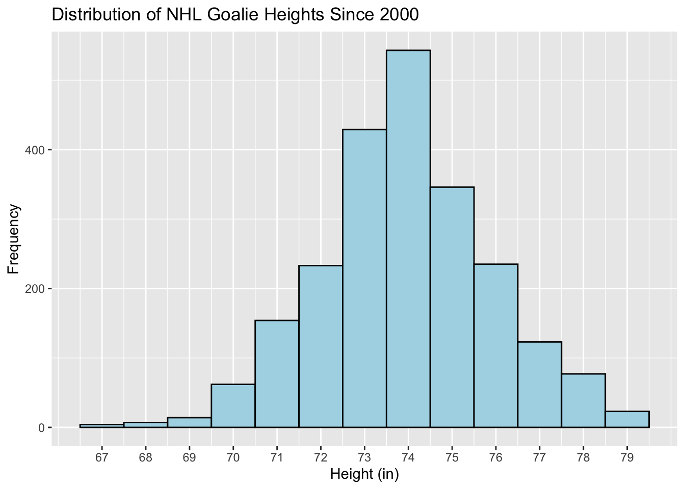
# Get average goalie heights in the NHL over the past 25 years
goalie_heights_per_season = goalies |>
group_by(seasonStartYear, seasonEndYear) |>
summarize(
n = n(),
min_height = min(height),
mean_height = mean(height),
median_height = median(height),
max_height = max(height)
) |>
ungroup() |>
arrange(seasonStartYear)## `summarise()` has grouped output by 'seasonStartYear'. You
## can override using the `.groups` argument.goalie_heights_per_season## # A tibble: 24 × 7
## seasonStartYear seasonEndYear n min_height mean_height median_height
## <int> <int> <int> <int> <dbl> <dbl>
## 1 2000 2001 91 67 72.4 73
## 2 2001 2002 90 67 72.5 73
## 3 2002 2003 94 67 72.7 73
## 4 2003 2004 96 67 73.0 73
## 5 2005 2006 93 70 73.3 73
## 6 2006 2007 84 70 73.2 73
## 7 2007 2008 90 70 73.3 73
## 8 2008 2009 91 70 73.5 73
## 9 2009 2010 84 70 73.5 73
## 10 2010 2011 89 70 73.8 74
## # ℹ 14 more rows
## # ℹ 1 more variable: max_height <int># Plot NHL goalie heights over time
# Mean height
goalie_heights_per_season |>
ggplot(aes(x = seasonStartYear, y = mean_height)) +
geom_line(color="lightblue") +
geom_point(color="#000099") +
theme_minimal() +
labs(
title = "Average Height of NHL Goalies by Season",
x = "Season",
y = "Average Height"
) +
scale_x_continuous(
breaks = seq(2000, 2024, 2),
labels = paste(str_pad(seq(0, 24, 2), 2, pad = "0"), str_pad(seq(1, 25, 2), 2, pad = "0"), sep = "-")
) +
scale_y_continuous(
breaks = 60:83,
labels = c(paste0("5'", 0:11, '"'), paste0("6'", 0:11, '"'))
)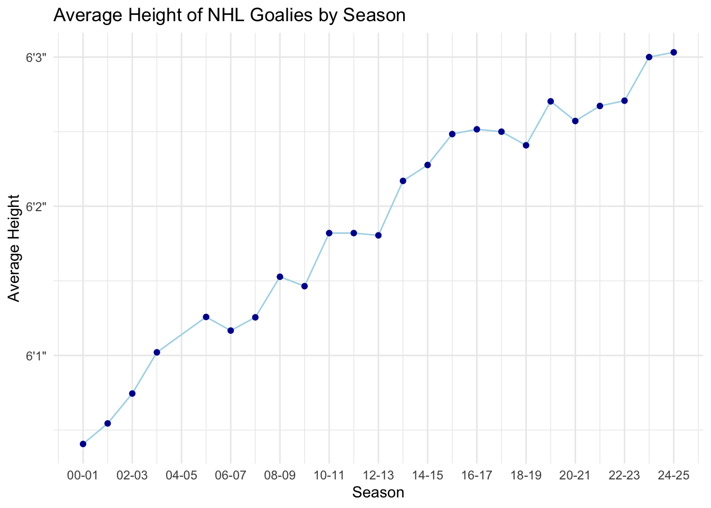
# Min height
goalie_heights_per_season |>
ggplot(aes(x = seasonStartYear, y = min_height)) +
geom_line(color="lightblue") +
geom_point(color="#000099") +
theme_minimal() +
labs(
title = "Minimum Height of NHL Goalies by Season",
x = "Season",
y = "Minimum Height"
) +
scale_x_continuous(
breaks = seq(2000, 2024, 2),
labels = paste(str_pad(seq(0, 24, 2), 2, pad = "0"), str_pad(seq(1, 25, 2), 2, pad = "0"), sep = "-")
) +
scale_y_continuous(
breaks = 60:83,
labels = c(paste0("5'", 0:11, '"'), paste0("6'", 0:11, '"'))
)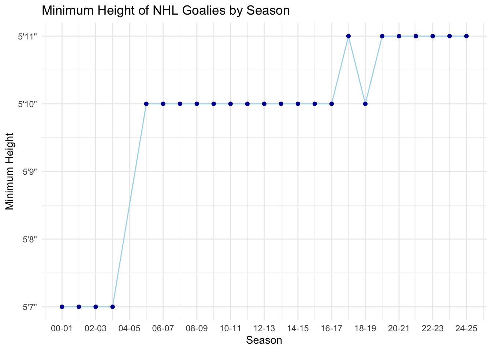
# Median height
goalie_heights_per_season |>
ggplot(aes(x = seasonStartYear, y = median_height)) +
geom_line(color="lightblue") +
geom_point(color="#000099") +
theme_minimal() +
labs(
title = "Median Height of NHL Goalies by Season",
x = "Season",
y = "Median Height"
) +
scale_x_continuous(
breaks = seq(2000, 2024, 2),
labels = paste(str_pad(seq(0, 24, 2), 2, pad = "0"), str_pad(seq(1, 25, 2), 2, pad = "0"), sep = "-")
) +
scale_y_continuous(
breaks = 60:83,
labels = c(paste0("5'", 0:11, '"'), paste0("6'", 0:11, '"'))
)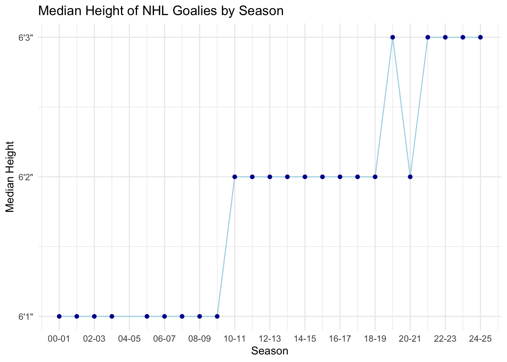
# Max height
goalie_heights_per_season |>
ggplot(aes(x = seasonStartYear, y = max_height)) +
geom_line(color="lightblue") +
geom_point(color="#000099") +
theme_minimal() +
labs(
title = "Maximum Height of NHL Goalies by Season",
x = "Season",
y = "Maximum Height"
) +
scale_x_continuous(
breaks = seq(2000, 2024, 2),
labels = paste(str_pad(seq(0, 24, 2), 2, pad = "0"), str_pad(seq(1, 25, 2), 2, pad = "0"), sep = "-")
) +
scale_y_continuous(
breaks = 60:83,
labels = c(paste0("5'", 0:11, '"'), paste0("6'", 0:11, '"'))
)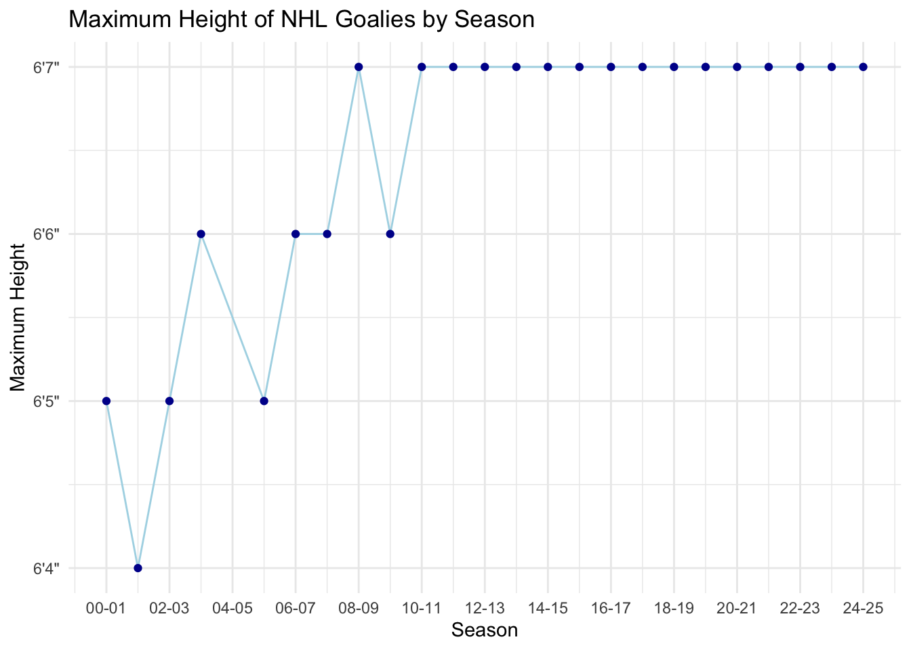
# Explore correlation between physical attributes and time
goalies |>
select(seasonStartYear, height, weight) |>
cor() |>
ggcorrplot(lab = T, title = "Correlation Between Physical Attributes and\nTime of NHL Goalies")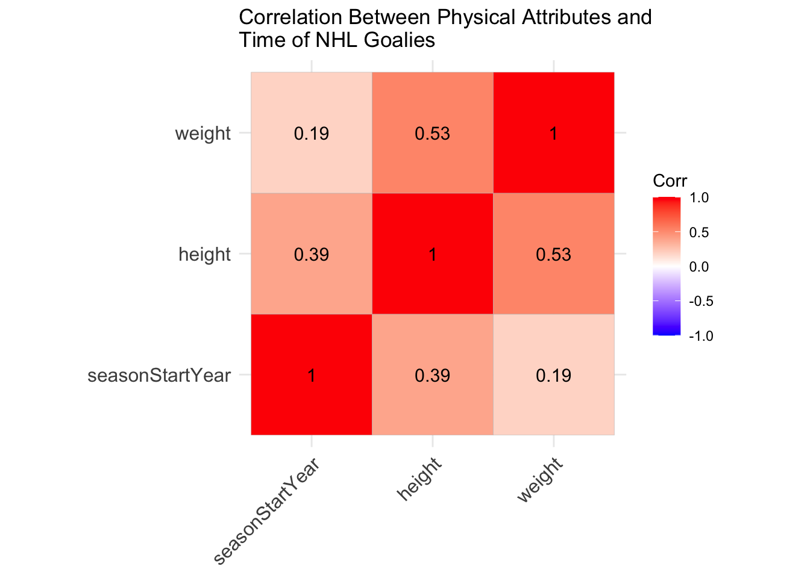
It appears that NHL goalies have been trending taller over the past 25 years. The mean height has consistently increased from about 72.4 inches to just over 75 inches. Similarly, the minimum height has risen from 67 inches to 71 inches, median from 73 inches to 75 inches, and maximum from 76 to 79 inches. It is worth noting that the minimum and maximum don’t necessarily mean much since there could be one very small/big goalie who stays in the league for multiple seasons. However, the upward trend in mean height and moderately strong correlation coefficient of 0.39 between height and season is indicative of NHL goalies getting bigger. On top of this, there hasn’t been a goalie under 5’11” in the past 6 seasons.
# Check how many observations are considered established
established_goalies = goalies |>
filter(gamesPlayed >= 25 | (gamesPlayed >= 22 & seasonStartYear == 2024))
established_goalies |>
summarize(
n = n(),
prop_of_goalies = n() / nrow(goalies),
prop_of_shots_against = sum(shotsAgainst) / sum(goalies$shotsAgainst),
prop_of_goals_against = sum(goalsAgainst) / sum(goalies$goalsAgainst),
prop_of_time_on_ice = sum(timeOnIce) / sum(goalies$timeOnIce)
)## # A tibble: 1 × 5
## n prop_of_goalies prop_of_shots_against prop_of_goals_against
## <int> <dbl> <dbl> <dbl>
## 1 1146 0.509 0.854 0.839
## # ℹ 1 more variable: prop_of_time_on_ice <dbl>Approximately 51% of the goalies data includes “established” goalies i.e. goalies who played at least 25 games (or 22 for the current 2024-25 season). This threshold comes from the default filter for stat leaders on NHL.com. Around 85% of the shots faced and 84% of goals allowed in the NHL since 2000 have been against established goalies. This makes sense given that established goalies also make up around 85% of the time played in the data.
# Get average goalie heights of established goalies in the NHL over the past 25 years
established_goalie_heights_per_season = established_goalies |>
group_by(seasonStartYear, seasonEndYear) |>
summarize(
n = n(),
min_height = min(height),
mean_height = mean(height),
median_height = median(height),
max_height = max(height),
.groups = "drop"
) |>
ungroup() |>
arrange(seasonStartYear)
established_goalie_heights_per_season## # A tibble: 24 × 7
## seasonStartYear seasonEndYear n min_height mean_height median_height
## <int> <int> <int> <int> <dbl> <dbl>
## 1 2000 2001 48 67 72.4 73
## 2 2001 2002 45 67 72.7 73
## 3 2002 2003 42 67 72.8 73
## 4 2003 2004 45 70 73.0 73
## 5 2005 2006 52 70 73.1 73
## 6 2006 2007 44 70 73 73
## 7 2007 2008 44 70 73.2 73
## 8 2008 2009 47 70 73.2 73
## 9 2009 2010 47 70 73.6 74
## 10 2010 2011 49 71 73.7 74
## # ℹ 14 more rows
## # ℹ 1 more variable: max_height <int># Plot NHL goalies heights over time for goalies with at least 25 games played (22 for current season)
# Mean height
established_goalie_heights_per_season |>
ggplot(aes(x = seasonStartYear, y = mean_height)) +
geom_line(color="lightblue") +
geom_point(color="#000099") +
theme_minimal() +
labs(
title = "Average Height of NHL Goalies by Season (Minimum 25 Games Played)",
x = "Season",
y = "Average Height"
) +
scale_x_continuous(
breaks = seq(2000, 2024, 2),
labels = paste(str_pad(seq(0, 24, 2), 2, pad = "0"), str_pad(seq(1, 25, 2), 2, pad = "0"), sep = "-")
) +
scale_y_continuous(
breaks = 60:83,
labels = c(paste0("5'", 0:11, '"'), paste0("6'", 0:11, '"'))
)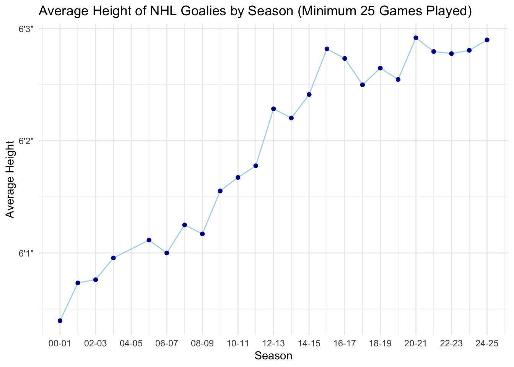
# Min height
established_goalie_heights_per_season |>
ggplot(aes(x = seasonStartYear, y = min_height)) +
geom_line(color="lightblue") +
geom_point(color="#000099") +
theme_minimal() +
labs(
title = "Minimum Height of Established NHL Goalies by Season",
x = "Season",
y = "Minimum Height"
) +
scale_x_continuous(
breaks = seq(2000, 2024, 2),
labels = paste(str_pad(seq(0, 24, 2), 2, pad = "0"), str_pad(seq(1, 25, 2), 2, pad = "0"), sep = "-")
) +
scale_y_continuous(
breaks = 60:83,
labels = c(paste0("5'", 0:11, '"'), paste0("6'", 0:11, '"'))
)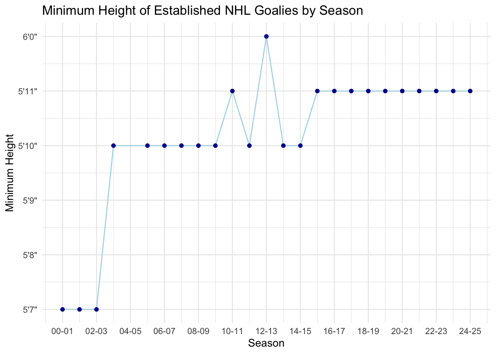
# Median height
established_goalie_heights_per_season |>
ggplot(aes(x = seasonStartYear, y = median_height)) +
geom_line(color="lightblue") +
geom_point(color="#000099") +
theme_minimal() +
labs(
title = "Median Height of Established NHL Goalies by Season",
x = "Season",
y = "Median Height"
) +
scale_x_continuous(
breaks = seq(2000, 2024, 2),
labels = paste(str_pad(seq(0, 24, 2), 2, pad = "0"), str_pad(seq(1, 25, 2), 2, pad = "0"), sep = "-")
) +
scale_y_continuous(
breaks = 60:83,
labels = c(paste0("5'", 0:11, '"'), paste0("6'", 0:11, '"'))
)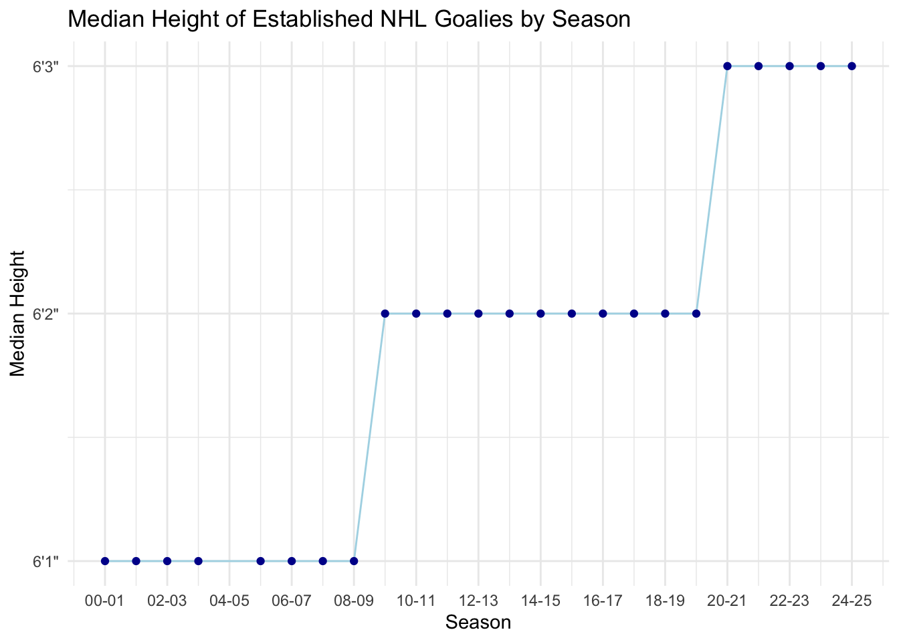
# Max height
established_goalie_heights_per_season |>
ggplot(aes(x = seasonStartYear, y = max_height)) +
geom_line(color="lightblue") +
geom_point(color="#000099") +
theme_minimal() +
labs(
title = "Maximum Height of Established NHL Goalies by Season",
x = "Season",
y = "Maximum Height"
) +
scale_x_continuous(
breaks = seq(2000, 2024, 2),
labels = paste(str_pad(seq(0, 24, 2), 2, pad = "0"), str_pad(seq(1, 25, 2), 2, pad = "0"), sep = "-")
) +
scale_y_continuous(
breaks = 60:83,
labels = c(paste0("5'", 0:11, '"'), paste0("6'", 0:11, '"'))
)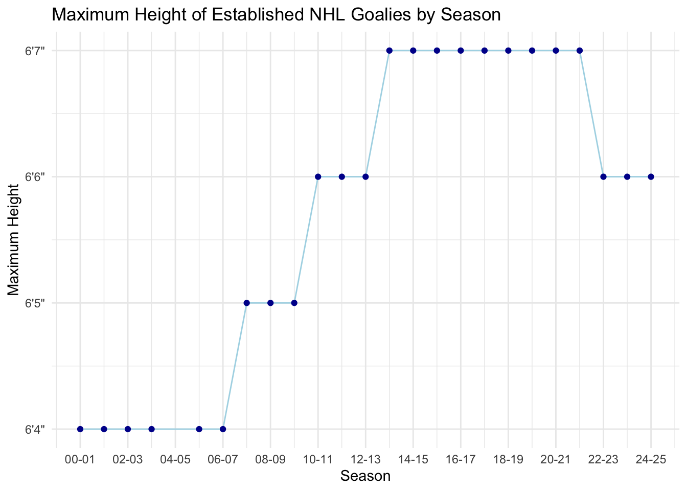
The results for established goalies follow the same upward trend in height as all goalies. This means the results seen earlier are not influenced by call-ups who are only in the league for a couple of games.
# Get the top 5 NHL goalie producing countries in each season
goalie_counts_by_country_and_season = goalies |>
group_by(seasonStartYear, seasonEndYear, birthCountryCode) |>
summarize(n = n(), .groups = "drop_last") |>
slice_max(n, n = 5, with_ties = F) |>
ungroup() |>
arrange(seasonStartYear, -n)
goalie_counts_by_country_and_season## # A tibble: 120 × 4
## seasonStartYear seasonEndYear birthCountryCode n
## <int> <int> <fct> <int>
## 1 2000 2001 CAN 55
## 2 2000 2001 USA 15
## 3 2000 2001 CZE 5
## 4 2000 2001 FIN 3
## 5 2000 2001 SWE 3
## 6 2001 2002 CAN 52
## 7 2001 2002 USA 13
## 8 2001 2002 CZE 6
## 9 2001 2002 FIN 6
## 10 2001 2002 SWE 3
## # ℹ 110 more rows# Plot the top 5 goalie countries
goalie_counts_by_country_and_season |>
filter(seasonStartYear >= 2005) |>
ggplot(aes(x = seasonStartYear, y = n, fill = reorder(birthCountryCode, -n))) +
geom_bar(stat = "identity", position = "dodge", width = 0.8) +
labs(
title = "Top 5 Birth Countries of NHL Goalies by Season",
x = "Season",
y = "Count",
legend = "Country"
) +
scale_x_continuous(
breaks = seq(2000, 2024, 2),
labels = paste(str_pad(seq(0, 24, 2), 2, pad = "0"), str_pad(seq(1, 25, 2), 2, pad = "0"), sep = "-")
) +
scale_fill_brewer("Country", palette = "Set1")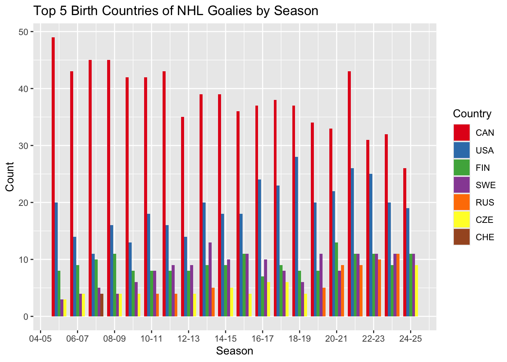
# Get average goalie heights in the NHL over the past 25 years by country
goalie_heights_per_season_country = goalies |>
filter(birthCountryCode %in% c("CAN", "USA", "SWE", "FIN")) |>
group_by(seasonStartYear, seasonEndYear, birthCountryCode) |>
summarize(
n = n(),
min_height = min(height),
mean_height = mean(height),
median_height = median(height),
max_height = max(height),
.groups = "drop"
) |>
ungroup() |>
arrange(birthCountryCode, seasonStartYear)
goalie_heights_per_season_country## # A tibble: 96 × 8
## seasonStartYear seasonEndYear birthCountryCode n min_height mean_height
## <int> <int> <fct> <int> <int> <dbl>
## 1 2000 2001 CAN 55 67 72.3
## 2 2001 2002 CAN 52 67 72.4
## 3 2002 2003 CAN 53 67 72.6
## 4 2003 2004 CAN 55 67 73.0
## 5 2005 2006 CAN 49 70 73.1
## 6 2006 2007 CAN 43 70 73.2
## 7 2007 2008 CAN 45 70 73.2
## 8 2008 2009 CAN 45 70 73.6
## 9 2009 2010 CAN 42 70 73.7
## 10 2010 2011 CAN 42 70 73.7
## # ℹ 86 more rows
## # ℹ 2 more variables: median_height <dbl>, max_height <int># Plot NHL goalie heights by country over time
# Mean height
goalie_heights_per_season_country |>
ggplot(aes(x = seasonStartYear, y = mean_height, colour = birthCountryCode)) +
geom_line() +
geom_point() +
facet_wrap(~birthCountryCode) +
theme_minimal() +
labs(
title = "Average Height of NHL Goalies by Season and Birth Country",
x = "Season",
y = "Average Height",
colour = "Country"
) +
scale_x_continuous(
breaks = seq(2000, 2024, 6),
labels = paste0("'", str_pad(seq(0, 24, 6), 2, pad = "0"))
) +
scale_y_continuous(
breaks = 60:83,
labels = c(paste0("5'", 0:11, '"'), paste0("6'", 0:11, '"'))
)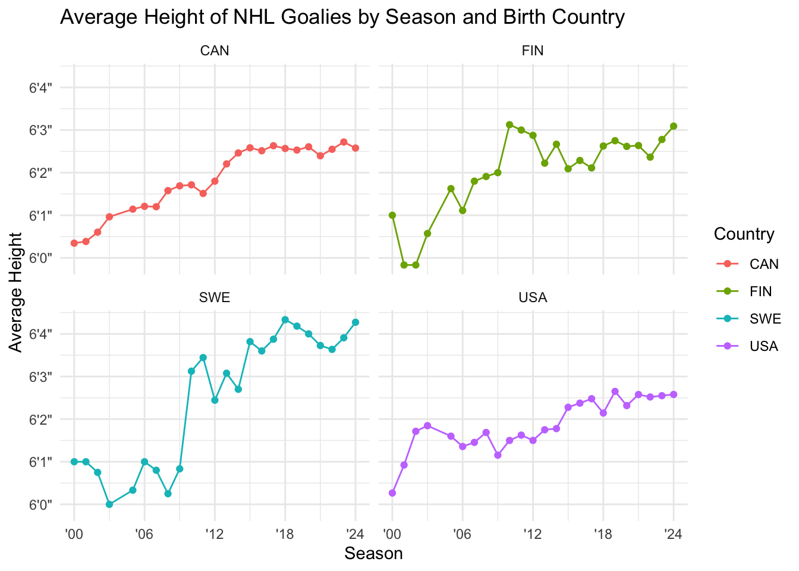
# Min height
goalie_heights_per_season_country |>
ggplot(aes(x = seasonStartYear, y = min_height, colour = birthCountryCode)) +
geom_line() +
geom_point() +
facet_wrap(~birthCountryCode) +
theme_minimal() +
labs(
title = "Minimum Height of NHL Goalies by Season and Birth Country",
x = "Season",
y = "Minimum Height",
colour = "Country"
) +
scale_x_continuous(
breaks = seq(2000, 2024, 6),
labels = paste0("'", str_pad(seq(0, 24, 6), 2, pad = "0"))
) +
scale_y_continuous(
breaks = 60:83,
labels = c(paste0("5'", 0:11, '"'), paste0("6'", 0:11, '"'))
)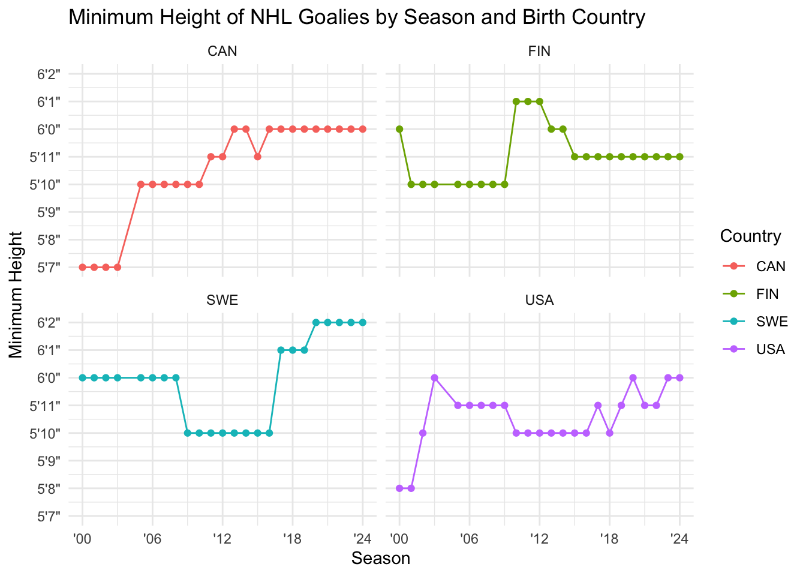
# Median height
goalie_heights_per_season_country |>
ggplot(aes(x = seasonStartYear, y = median_height, colour = birthCountryCode)) +
geom_line() +
geom_point() +
facet_wrap(~birthCountryCode) +
theme_minimal() +
labs(
title = "Median Height of NHL Goalies by Season and Birth Country",
x = "Season",
y = "Median Height",
colour = "Country"
) +
scale_x_continuous(
breaks = seq(2000, 2024, 6),
labels = paste0("'", str_pad(seq(0, 24, 6), 2, pad = "0"))
) +
scale_y_continuous(
breaks = 60:83,
labels = c(paste0("5'", 0:11, '"'), paste0("6'", 0:11, '"'))
)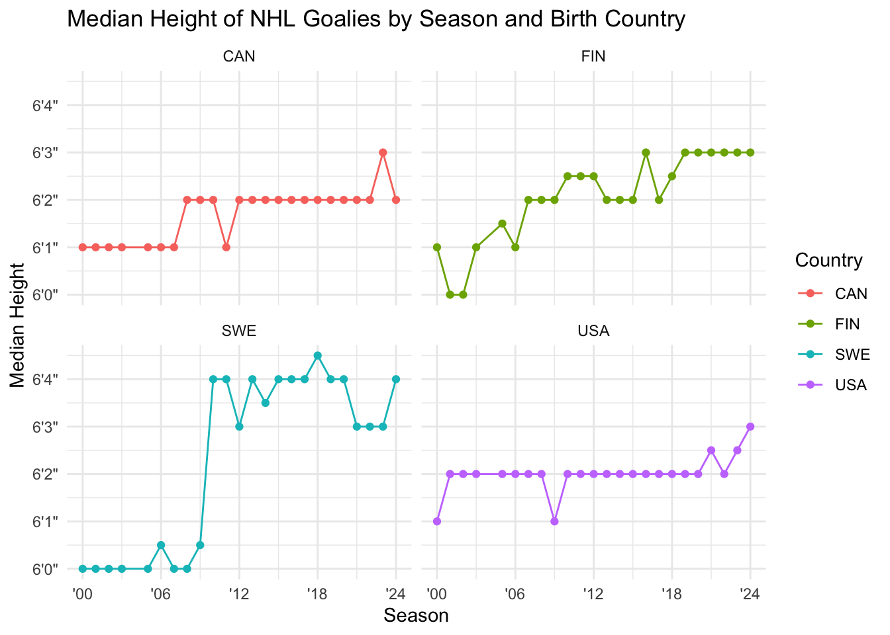
# Max height
goalie_heights_per_season_country |>
ggplot(aes(x = seasonStartYear, y = max_height, colour = birthCountryCode)) +
geom_line() +
geom_point() +
facet_wrap(~birthCountryCode) +
theme_minimal() +
labs(
title = "Maximum Height of NHL Goalies by Season and Birth Country",
x = "Season",
y = "Maximum Height",
colour = "Country"
) +
scale_x_continuous(
breaks = seq(2000, 2024, 6),
labels = paste0("'", str_pad(seq(0, 24, 6), 2, pad = "0"))
) +
scale_y_continuous(
breaks = 60:83,
labels = c(paste0("5'", 0:11, '"'), paste0("6'", 0:11, '"'))
)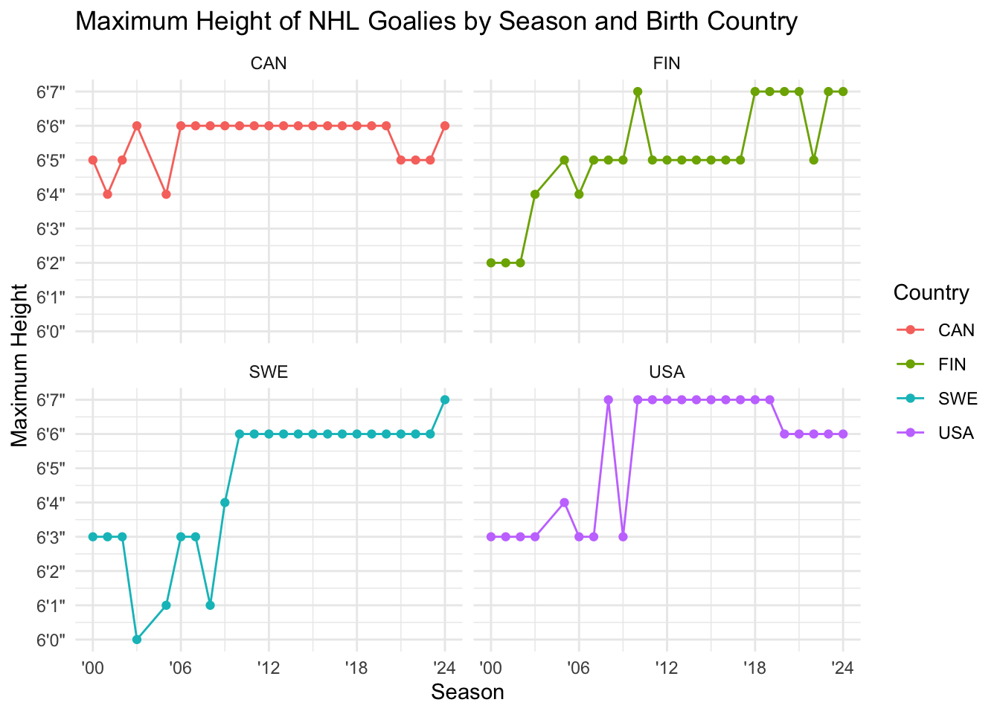
After filtering the data to only include the top 4 NHL goalie producing countries Canada, United States, Sweden, and Finland, the upward trend in height is exhibited across all 4 nations. While Canada and Finland’s averages are currently around 6’3”, the average is slightly lower for the United States at 6’2.5” and considerably higher for Sweden just below 6’4.5”.
# Explore distribution of ranked NHL goalie prospects heights
prospects |>
ggplot(aes(height)) +
geom_histogram(binwidth = 1, color = "black", fill = "lightblue") +
scale_x_continuous(breaks = 67:79) +
labs(
title = "Distribution of Ranked NHL Goalie Prospect Heights Since 2008",
x = "Height (in)",
y = "Frequency"
)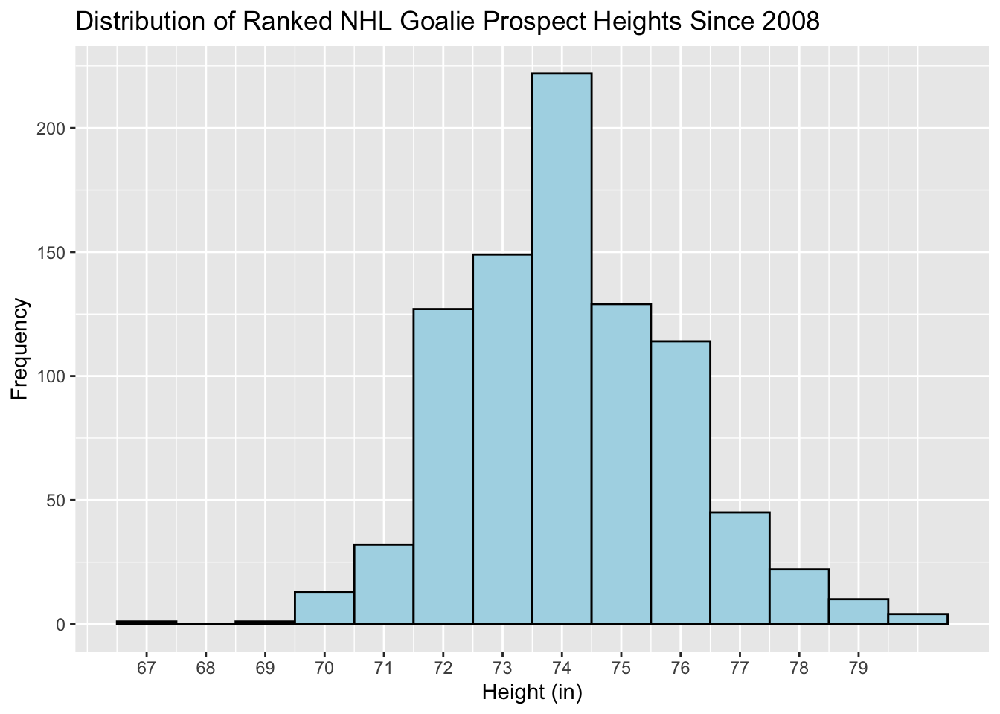
# Get average heights of ranked NHL goalie prospects by draft year
prospect_heights_per_season = prospects |>
group_by(draftYear) |>
summarize(
n = n(),
min_height = min(height),
mean_height = mean(height),
median_height = median(height),
max_height = max(height)
) |>
ungroup() |>
arrange(draftYear)
prospect_heights_per_season## # A tibble: 18 × 6
## draftYear n min_height mean_height median_height max_height
## <int> <int> <int> <dbl> <dbl> <int>
## 1 2008 25 71 74.1 74 80
## 2 2009 43 71 73.9 74 79
## 3 2010 37 69 73.1 73 77
## 4 2011 48 70 73.8 74 78
## 5 2012 54 70 73.6 74 78
## 6 2013 50 70 73.7 73 78
## 7 2014 56 70 73.9 74 79
## 8 2015 52 70 74.4 74.5 79
## 9 2016 53 72 74.0 74 78
## 10 2017 48 72 74.7 75 79
## 11 2018 56 70 74.4 74 78
## 12 2019 48 71 74.0 74 80
## 13 2020 46 71 74.8 74.5 79
## 14 2021 45 71 74.4 74 79
## 15 2022 52 67 73.8 74 77
## 16 2023 51 72 74.3 74 79
## 17 2024 57 72 74.4 74 79
## 18 2025 48 71 74.4 74 80# Plot ranked NHL goalie prospects heights over time
# Mean height
prospect_heights_per_season |>
ggplot(aes(x = draftYear, y = mean_height)) +
geom_line(color="lightblue") +
geom_point(color="#000099") +
theme_minimal() +
labs(
title = "Average Height of Ranked NHL Goalie Prospects by Draft Year",
x = "Draft Year",
y = "Average Height"
) +
scale_x_continuous(breaks = seq(2008, 2025, 2)) +
scale_y_continuous(
breaks = 60:83,
labels = c(paste0("5'", 0:11, '"'), paste0("6'", 0:11, '"'))
)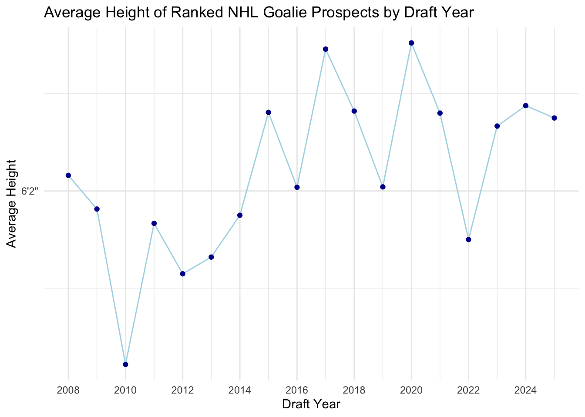
# Min height
prospect_heights_per_season |>
ggplot(aes(x = draftYear, y = min_height)) +
geom_line(color="lightblue") +
geom_point(color="#000099") +
theme_minimal() +
labs(
title = "Minimum Height of Ranked NHL Goalie Prospects by Draft Year",
x = "Draft Year",
y = "Minimum Height"
) +
scale_x_continuous(breaks = seq(2008, 2025, 2)) +
scale_y_continuous(
breaks = 60:83,
labels = c(paste0("5'", 0:11, '"'), paste0("6'", 0:11, '"'))
)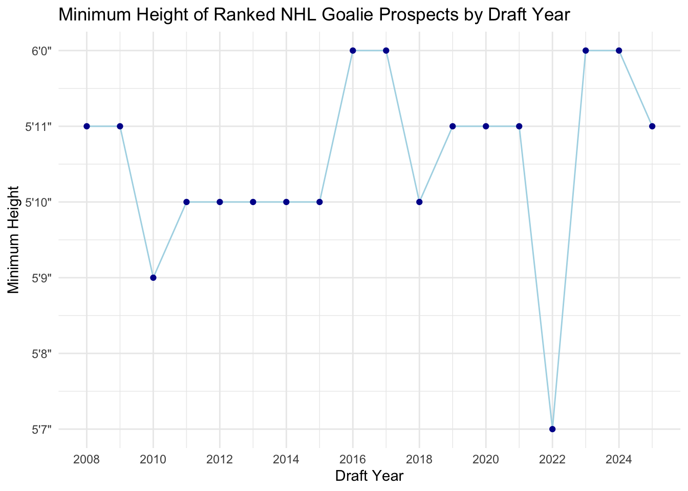
# Median height
prospect_heights_per_season |>
ggplot(aes(x = draftYear, y = median_height)) +
geom_line(color="lightblue") +
geom_point(color="#000099") +
theme_minimal() +
labs(
title = "Median Height of Ranked NHL Goalie Prospects by Draft Year",
x = "Draft Year",
y = "Median Height"
) +
scale_x_continuous(breaks = seq(2008, 2025, 2)) +
scale_y_continuous(
breaks = 60:83,
labels = c(paste0("5'", 0:11, '"'), paste0("6'", 0:11, '"'))
)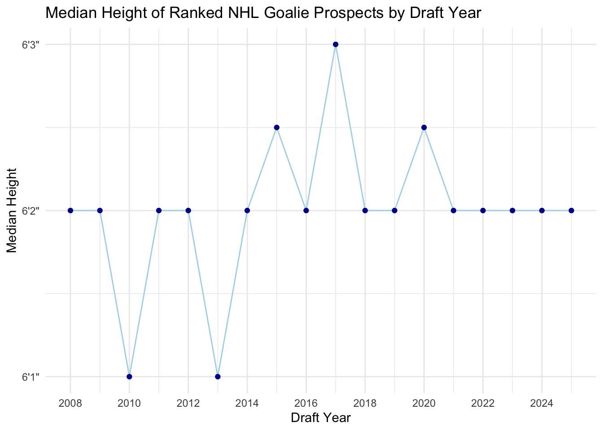
# Max height
prospect_heights_per_season |>
ggplot(aes(x = draftYear, y = max_height)) +
geom_line(color="lightblue") +
geom_point(color="#000099") +
theme_minimal() +
labs(
title = "Maximum Height of Ranked NHL Goalie Prospects by Draft Year",
x = "Draft Year",
y = "Maximum Height"
) +
scale_x_continuous(breaks = seq(2008, 2025, 2)) +
scale_y_continuous(
breaks = 60:83,
labels = c(paste0("5'", 0:11, '"'), paste0("6'", 0:11, '"'))
)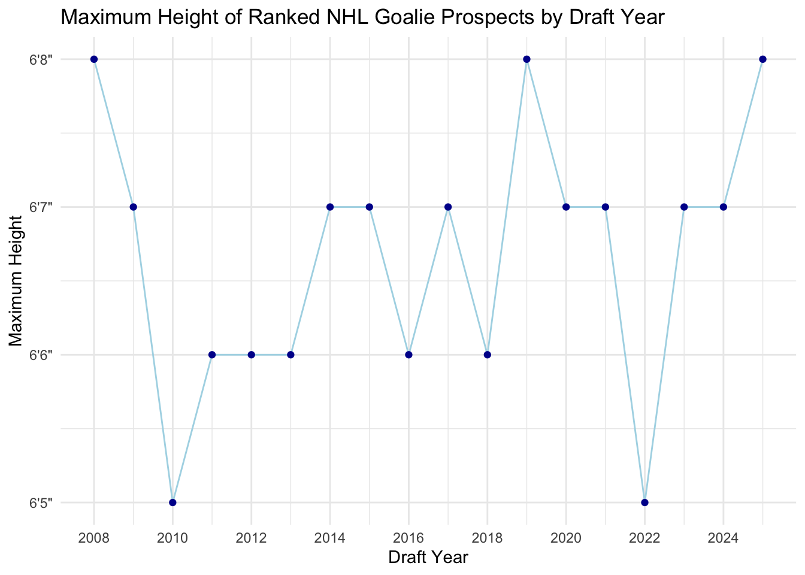
The height of goalie draft prospects appears to stay fairly consistent. The average height of ranked prospects from 2008 to 2025 tends to stay within the 73.75 to 74.5 inch range without any super significant trend. This is further validated by the median height which hovers around 74 inches (6’2”) throughout the same time period. It is worth noting, however, that the average height is slightly higher in the last decade compared to the 7 years prior by about 0.5-1 inches.
# Get average heights of ranked NHL goalie prospects by draft year and country
prospect_heights_per_season_and_nation = prospects |>
mutate(
nation = as.factor(ifelse(international, "International", "North American"))
) |>
group_by(draftYear, nation) |>
summarize(
n = n(),
min_height = min(height),
mean_height = mean(height),
median_height = median(height),
max_height = max(height),
.groups = "drop"
) |>
ungroup() |>
arrange(nation, draftYear)
prospect_heights_per_season_and_nation## # A tibble: 36 × 7
## draftYear nation n min_height mean_height median_height max_height
## <int> <fct> <int> <int> <dbl> <dbl> <int>
## 1 2008 International 4 73 75.8 76 78
## 2 2009 International 14 71 74.6 75 79
## 3 2010 International 9 69 72.6 73 75
## 4 2011 International 12 70 74.2 74.5 77
## 5 2012 International 13 70 73.3 74 76
## 6 2013 International 10 70 73 72.5 77
## 7 2014 International 15 70 73.7 74 77
## 8 2015 International 11 70 74 74 77
## 9 2016 International 15 72 73.6 74 77
## 10 2017 International 14 72 75 75 79
## # ℹ 26 more rows# Plot ranked NHL goalie prospects heights over time by nation status
# Mean height
prospect_heights_per_season_and_nation |>
ggplot(aes(x = draftYear, y = mean_height, colour = nation)) +
geom_line() +
geom_point() +
theme_minimal() +
labs(
title = "Average Height of Ranked NHL Goalie Prospects\nby Draft Year and International Status",
x = "Draft Year",
y = "Average Height",
colour = "International Status"
) +
scale_x_continuous(breaks = seq(2008, 2025, 2)) +
scale_y_continuous(
breaks = 60:83,
labels = c(paste0("5'", 0:11, '"'), paste0("6'", 0:11, '"'))
)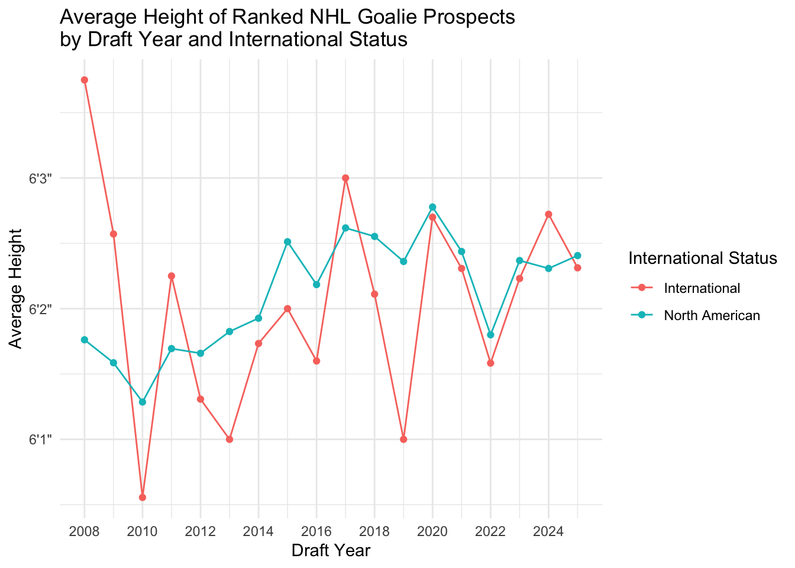
# Min height
prospect_heights_per_season_and_nation |>
ggplot(aes(x = draftYear, y = min_height, colour = nation)) +
geom_line() +
geom_point() +
theme_minimal() +
labs(
title = "Minimum Height of Ranked NHL Goalie Prospects\nby Draft Year and International Status",
x = "Draft Year",
y = "Minimum Height",
colour = "International Status"
) +
scale_x_continuous(breaks = seq(2008, 2025, 2)) +
scale_y_continuous(
breaks = 60:83,
labels = c(paste0("5'", 0:11, '"'), paste0("6'", 0:11, '"'))
)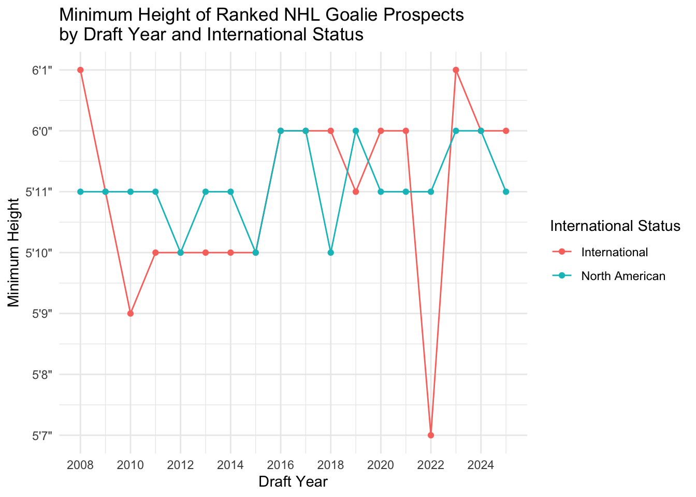
# Median height
prospect_heights_per_season_and_nation |>
ggplot(aes(x = draftYear, y = median_height, colour = nation)) +
geom_line() +
geom_point() +
theme_minimal() +
labs(
title = "Median Height of Ranked NHL Goalie Prospects\nby Draft Year and International Status",
x = "Draft Year",
y = "Median Height",
colour = "International Status"
) +
scale_x_continuous(breaks = seq(2008, 2025, 2)) +
scale_y_continuous(
breaks = 60:83,
labels = c(paste0("5'", 0:11, '"'), paste0("6'", 0:11, '"'))
)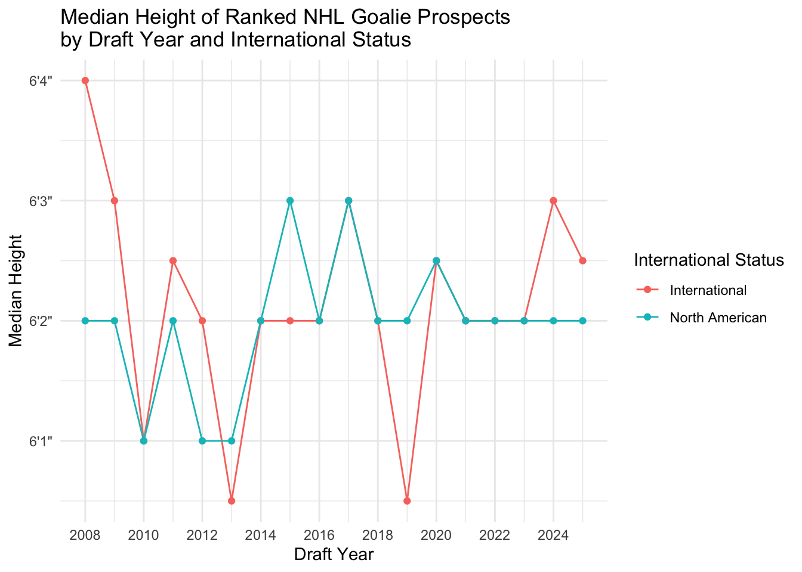
# Max height
prospect_heights_per_season_and_nation |>
ggplot(aes(x = draftYear, y = max_height, colour = nation)) +
geom_line() +
geom_point() +
theme_minimal() +
labs(
title = "Maximum Height of Ranked NHL Goalie Prospects\nby Draft Year and International Status",
x = "Draft Year",
y = "Maximum Height",
colour = "International Status"
) +
scale_x_continuous(breaks = seq(2008, 2025, 2)) +
scale_y_continuous(
breaks = 60:83,
labels = c(paste0("5'", 0:11, '"'), paste0("6'", 0:11, '"'))
)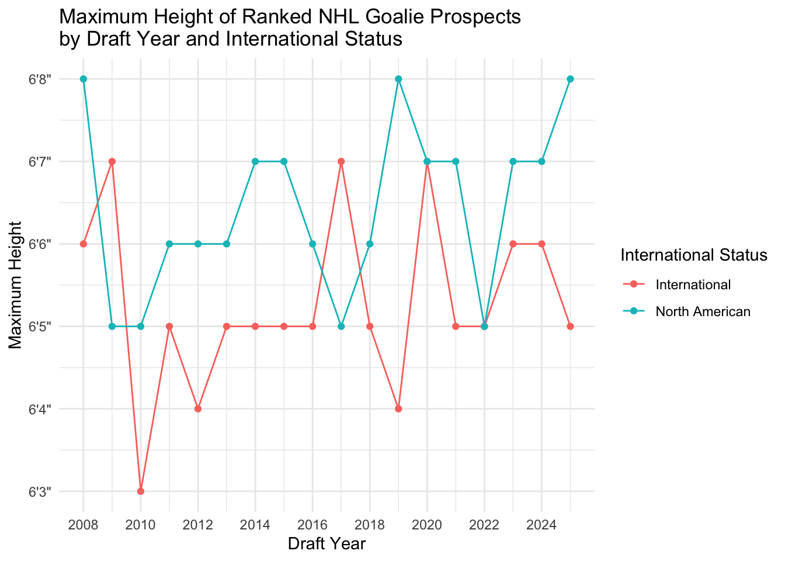
Similar to before, the average height of North American goalie prospects has stayed close to 6’2” with the same growth trends as the overall population. International goalies, on the other hand, have varied between 6’1” and 6’3” over the last 14 years. It is worth noting, however, that the number of ranked international goalies has been consistenly less than the North American class, which could explain the extra variance.
While the trend in average height of goalie prospects has a much weaker trend (if any) when compared to the goalies who actually played in the NHL, there is still evidence that NHL goalies have trended taller over the last quarter decade. This indicates that elite performance could depend on physical characteristics like height.
# Summarize the SA, GA, SV%, and GAA of established goalies
established_goalies |>
select(shotsAgainst, goalsAgainst, savePct, goalsAgainstAverage) |>
summary()## shotsAgainst goalsAgainst savePct goalsAgainstAverage
## Min. : 457.0 Min. : 40.00 Min. :0.8698 Min. :1.655
## 1st Qu.: 945.2 1st Qu.: 88.25 1st Qu.:0.9021 1st Qu.:2.385
## Median :1298.0 Median :119.00 Median :0.9102 Median :2.653
## Mean :1361.8 Mean :121.26 Mean :0.9094 Mean :2.680
## 3rd Qu.:1743.8 3rd Qu.:153.00 3rd Qu.:0.9175 3rd Qu.:2.916
## Max. :2668.0 Max. :234.00 Max. :0.9388 Max. :4.230# Explore distribution of save percentage for established goalies
established_goalies |>
ggplot(aes(savePct)) +
geom_histogram(binwidth = 0.003, color = "black", fill = "lightblue") +
scale_x_continuous(breaks = seq(0.800, 1.000, 0.005)) +
labs(
title = "Distribution of Save Percentage for Established NHL Goalies Since 2000",
x = "Save Percentage",
y = "Frequency"
)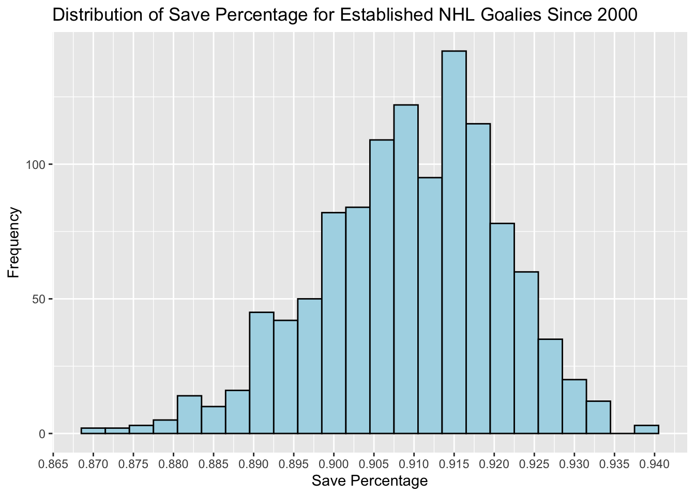
# Explore distribution of goals against average for established goalies
established_goalies |>
ggplot(aes(goalsAgainstAverage)) +
geom_histogram(binwidth = 0.1, color = "black", fill = "lightblue") +
scale_x_continuous(breaks = seq(1, 5, 0.1)) +
labs(
title = "Distribution of Goals Against Average for Established NHL Goalies Since 2000",
x = "Save Percentage",
y = "Frequency"
)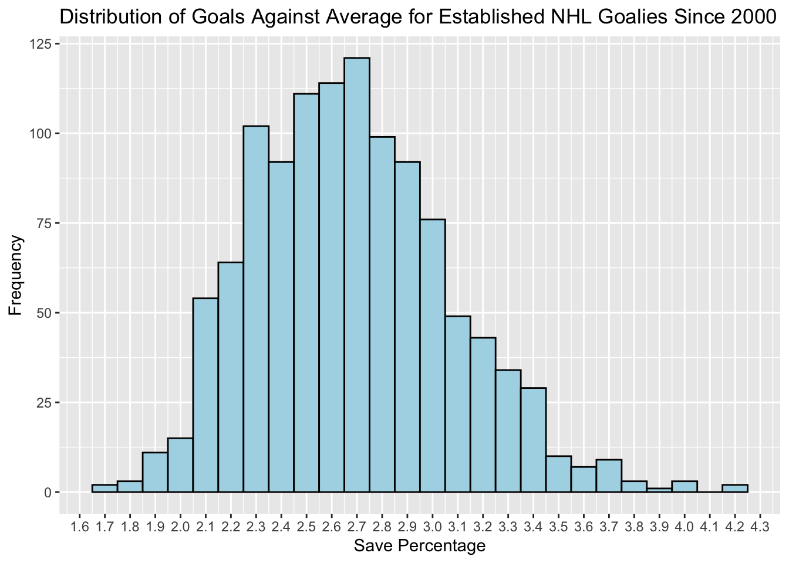
# Calculate the average SV% and GAA across each season
league_stats_by_season = goalies |>
group_by(seasonStartYear, seasonEndYear) |>
summarize(
mean_savePct = sum(saves) / sum(shotsAgainst),
mean_goalsAgainstAverage = (sum(goalsAgainst) * 60 * 60) / sum(timeOnIce), # notice secs to mins conversion
.groups = "drop"
) |>
ungroup() |>
arrange(seasonStartYear)
league_stats_by_season## # A tibble: 24 × 4
## seasonStartYear seasonEndYear mean_savePct mean_goalsAgainstAverage
## <int> <int> <dbl> <dbl>
## 1 2000 2001 0.904 2.62
## 2 2001 2002 0.908 2.49
## 3 2002 2003 0.909 2.52
## 4 2003 2004 0.912 2.43
## 5 2005 2006 0.902 2.91
## 6 2006 2007 0.906 2.74
## 7 2007 2008 0.909 2.60
## 8 2008 2009 0.909 2.72
## 9 2009 2010 0.911 2.66
## 10 2010 2011 0.913 2.61
## # ℹ 14 more rows# Plot the average league wide save percentage of each season
league_stats_by_season |>
ggplot(aes(x = seasonStartYear, y = mean_savePct)) +
geom_line(color="lightblue") +
geom_point(color="#000099") +
theme_minimal() +
labs(
title = "Average League-Wide Save Percentage in the NHL by Season",
x = "Season",
y = "Average Save %"
) +
scale_x_continuous(
breaks = seq(2000, 2024, 2),
labels = paste(str_pad(seq(0, 24, 2), 2, pad = "0"), str_pad(seq(1, 25, 2), 2, pad = "0"), sep = "-")
)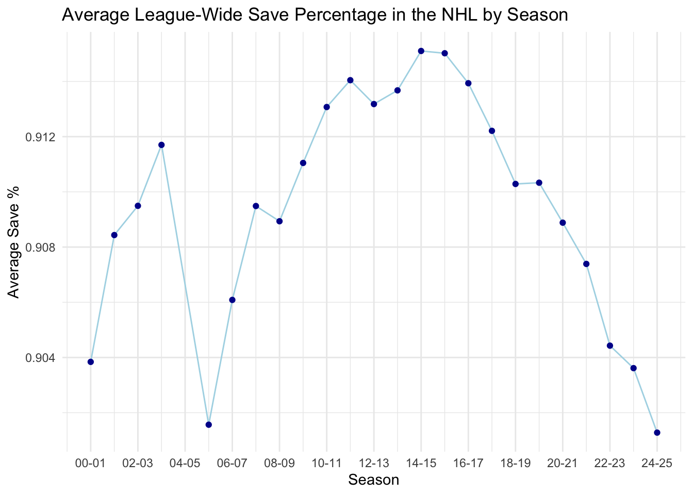
# Plot the average league wide GAA of each season
league_stats_by_season |>
ggplot(aes(x = seasonStartYear, y = mean_goalsAgainstAverage)) +
geom_line(color="lightblue") +
geom_point(color="#000099") +
theme_minimal() +
labs(
title = "Average League-Wide Goals Against Average in the NHL by Season",
x = "Season",
y = "Average GAA"
) +
scale_x_continuous(
breaks = seq(2000, 2024, 2),
labels = paste(str_pad(seq(0, 24, 2), 2, pad = "0"), str_pad(seq(1, 25, 2), 2, pad = "0"), sep = "-")
)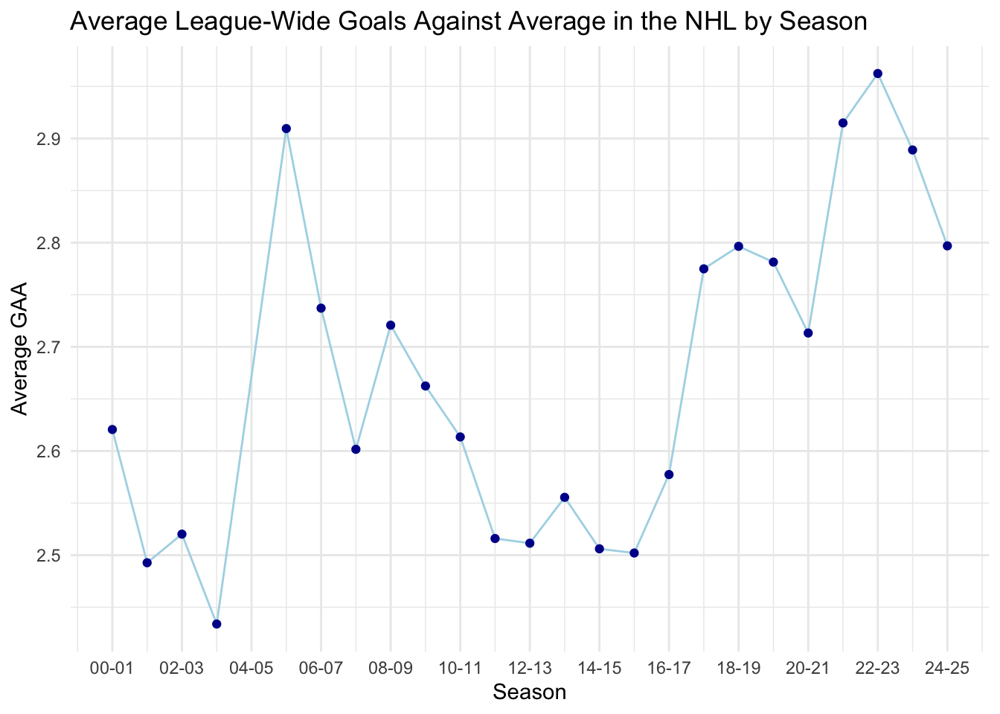
# Calculate the average SV% and GAA across each season for established goalies
established_league_stats_by_season = established_goalies |>
group_by(seasonStartYear, seasonEndYear) |>
summarize(
mean_savePct = sum(saves) / sum(shotsAgainst),
mean_goalsAgainstAverage = (sum(goalsAgainst) * 60 * 60) / sum(timeOnIce), # notice secs to mins conversion
.groups = "drop"
) |>
ungroup() |>
arrange(seasonStartYear)
established_league_stats_by_season## # A tibble: 24 × 4
## seasonStartYear seasonEndYear mean_savePct mean_goalsAgainstAverage
## <int> <int> <dbl> <dbl>
## 1 2000 2001 0.906 2.55
## 2 2001 2002 0.909 2.46
## 3 2002 2003 0.911 2.47
## 4 2003 2004 0.914 2.37
## 5 2005 2006 0.903 2.87
## 6 2006 2007 0.908 2.66
## 7 2007 2008 0.911 2.56
## 8 2008 2009 0.911 2.67
## 9 2009 2010 0.912 2.64
## 10 2010 2011 0.914 2.59
## # ℹ 14 more rows# Plot the average league wide save percentage of each season for established goalies
established_league_stats_by_season |>
ggplot(aes(x = seasonStartYear, y = mean_savePct)) +
geom_line(color="lightblue") +
geom_point(color="#000099") +
theme_minimal() +
labs(
title = "Average League-Wide Save Percentage in the NHL\nby Season for Established Goalies",
x = "Season",
y = "Average Save %"
) +
scale_x_continuous(
breaks = seq(2000, 2024, 2),
labels = paste(str_pad(seq(0, 24, 2), 2, pad = "0"), str_pad(seq(1, 25, 2), 2, pad = "0"), sep = "-")
)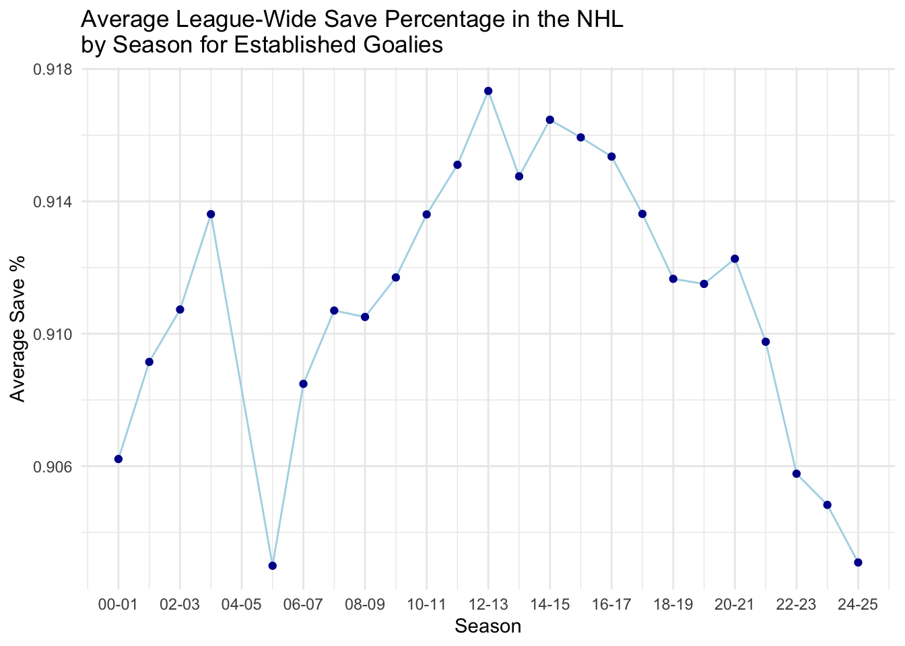
# Plot the average league wide GAA of each season for established goalies
established_league_stats_by_season |>
ggplot(aes(x = seasonStartYear, y = mean_goalsAgainstAverage)) +
geom_line(color="lightblue") +
geom_point(color="#000099") +
theme_minimal() +
labs(
title = "Average League-Wide Goals Against Average in the NHL\nby Season for Established Goalies",
x = "Season",
y = "Average GAA"
) +
scale_x_continuous(
breaks = seq(2000, 2024, 2),
labels = paste(str_pad(seq(0, 24, 2), 2, pad = "0"), str_pad(seq(1, 25, 2), 2, pad = "0"), sep = "-")
)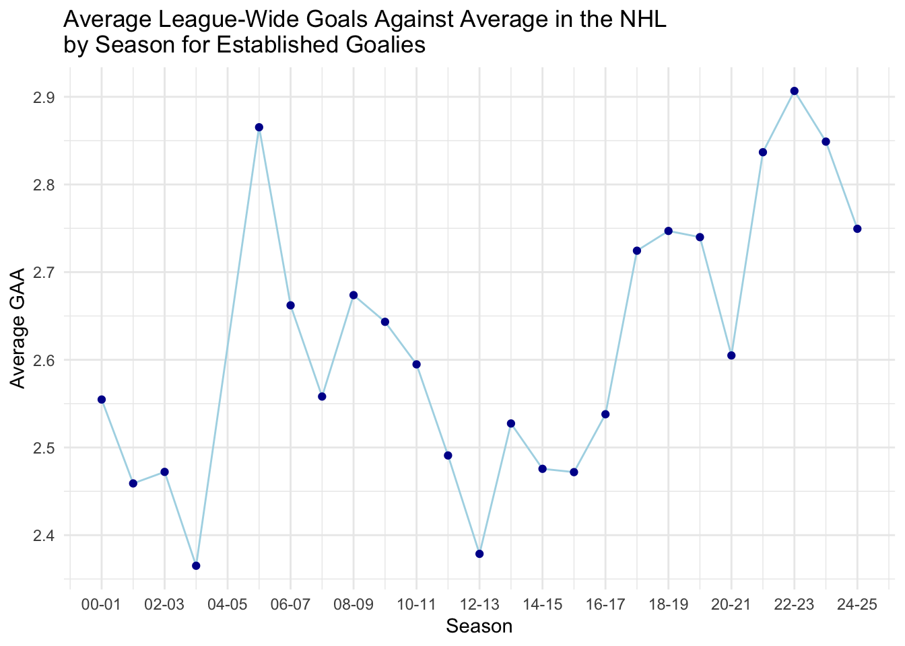
League-wide average save percentage has trended downwards since the 2014-15 season (.915 to .901). With a decrease in save percentage, I would intuitively expect to see an increase in goals against average. As expected, league-wide goals against average increased from 2.50 in 2014-15 to 2.80 in 2024-25, peaking at 2.96 in 2022-23. Similar numbers and trends are prevalent when looking at established goalies only. This makes sense given that approximately 85% and 84% of the shots against and goals against happened on established goalies, respectively.
The overall trend of higher goals against and lower save percentages indicates that goalies are getting scored on more in the last decade than they were previously. It is unclear on why this is happening, but I suspect that it is due to the increased skill level of modern day forwards/defencemen. The NHL substantially restricted the size of goalie equipment at the start of the 2005-06 season, which explains the large dip in save percentage and large spike in goals against average during that season.
# Explore correlation between performance stats and physical attributes
established_goalies |>
select(savePct, goalsAgainstAverage, wins, height, weight) |>
cor() |>
ggcorrplot(lab = T, title = "Correlation Between Performance and Physical\nAttributes of Established NHL Goalies")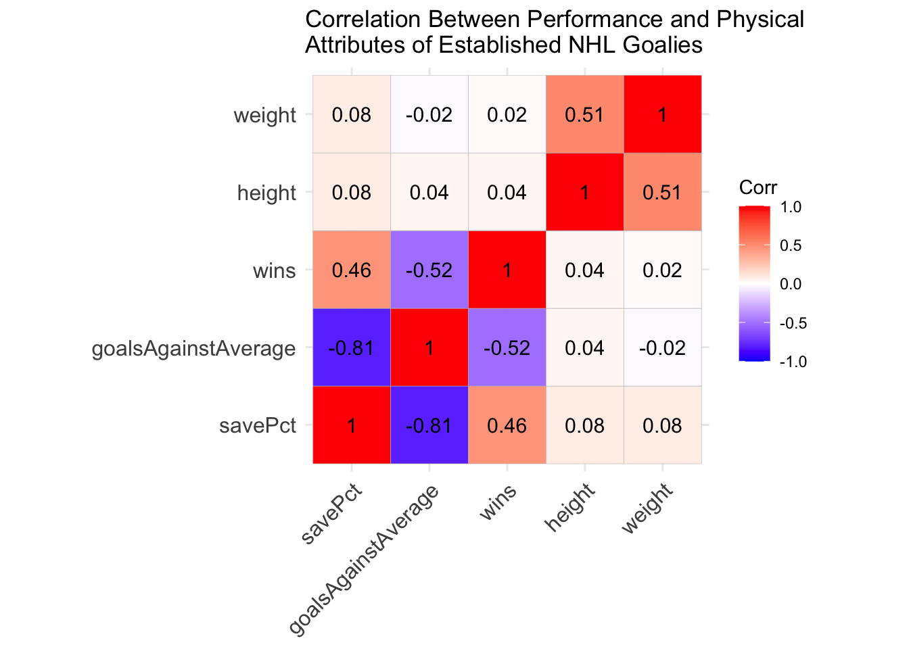
# Calculate the average SV% and GAA across each season for established goalies
# grouped by undersized status
established_league_stats_by_season_undersized = established_goalies |>
group_by(seasonStartYear, seasonEndYear, undersized) |>
summarize(
mean_savePct = sum(saves) / sum(shotsAgainst),
mean_goalsAgainstAverage = (sum(goalsAgainst) * 60 * 60) / sum(timeOnIce), # notice secs to mins conversion
mean_win_percentage = sum(wins) / sum(gamesPlayed),
.groups = "drop"
) |>
ungroup() |>
arrange(seasonStartYear, undersized)
established_league_stats_by_season_undersized## # A tibble: 47 × 6
## seasonStartYear seasonEndYear undersized mean_savePct mean_goalsAgainstAver…¹
## <int> <int> <lgl> <dbl> <dbl>
## 1 2000 2001 FALSE 0.907 2.53
## 2 2000 2001 TRUE 0.902 2.69
## 3 2001 2002 FALSE 0.909 2.45
## 4 2001 2002 TRUE 0.908 2.50
## 5 2002 2003 FALSE 0.912 2.44
## 6 2002 2003 TRUE 0.897 2.83
## 7 2003 2004 FALSE 0.914 2.38
## 8 2003 2004 TRUE 0.913 2.27
## 9 2005 2006 FALSE 0.903 2.89
## 10 2005 2006 TRUE 0.902 2.71
## # ℹ 37 more rows
## # ℹ abbreviated name: ¹mean_goalsAgainstAverage
## # ℹ 1 more variable: mean_win_percentage <dbl># Plot the average league wide save percentage of each season for established goalies
# grouped by undersize status
established_league_stats_by_season_undersized |>
ggplot(aes(x = seasonStartYear, y = mean_savePct, color = undersized)) +
geom_line() +
geom_point() +
theme_minimal() +
labs(
title = "Average League-Wide Save Percentage by Season\nBetween Short and Tall Established NHL Goalies",
x = "Season",
y = "Average Save %",
color = "Undersized?"
) +
scale_x_continuous(
breaks = seq(2000, 2024, 2),
labels = paste(str_pad(seq(0, 24, 2), 2, pad = "0"), str_pad(seq(1, 25, 2), 2, pad = "0"), sep = "-")
)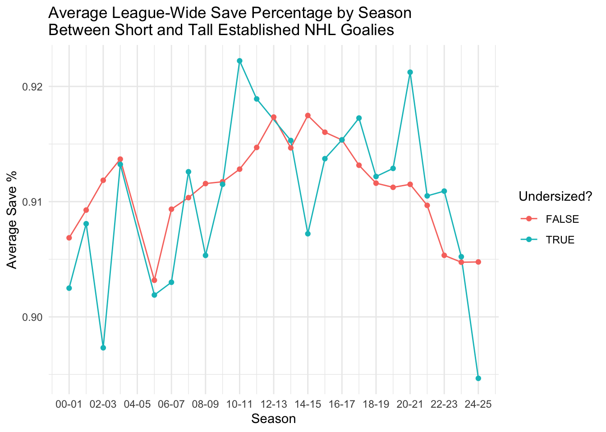
# Plot the average league wide GAA of each season for established goalies
# grouped by undersize status
established_league_stats_by_season_undersized |>
ggplot(aes(x = seasonStartYear, y = mean_goalsAgainstAverage, color = undersized)) +
geom_line() +
geom_point() +
theme_minimal() +
labs(
title = "Average League-Wide Goals Against Average by\nSeason Between Short and Tall Established NHL Goalies",
x = "Season",
y = "Average GAA",
color = "Undersized?"
) +
scale_x_continuous(
breaks = seq(2000, 2024, 2),
labels = paste(str_pad(seq(0, 24, 2), 2, pad = "0"), str_pad(seq(1, 25, 2), 2, pad = "0"), sep = "-")
)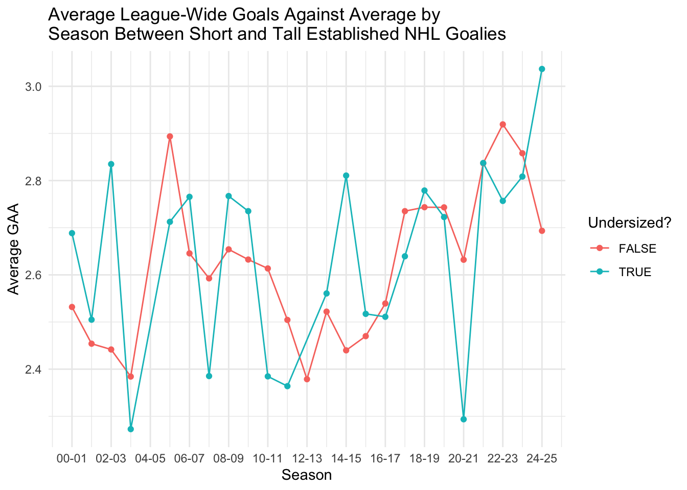
# Plot the average league wide win percentage of each season for established goalies
# grouped by undersize status
established_league_stats_by_season_undersized |>
ggplot(aes(x = seasonStartYear, y = mean_win_percentage, color = undersized)) +
geom_line() +
geom_point() +
theme_minimal() +
labs(
title = "Average League-Wide Win Percentage by Season\nBetween Short and Tall Established NHL Goalies",
x = "Season",
y = "Average Win %",
color = "Undersized?"
) +
scale_x_continuous(
breaks = seq(2000, 2024, 2),
labels = paste(str_pad(seq(0, 24, 2), 2, pad = "0"), str_pad(seq(1, 25, 2), 2, pad = "0"), sep = "-")
)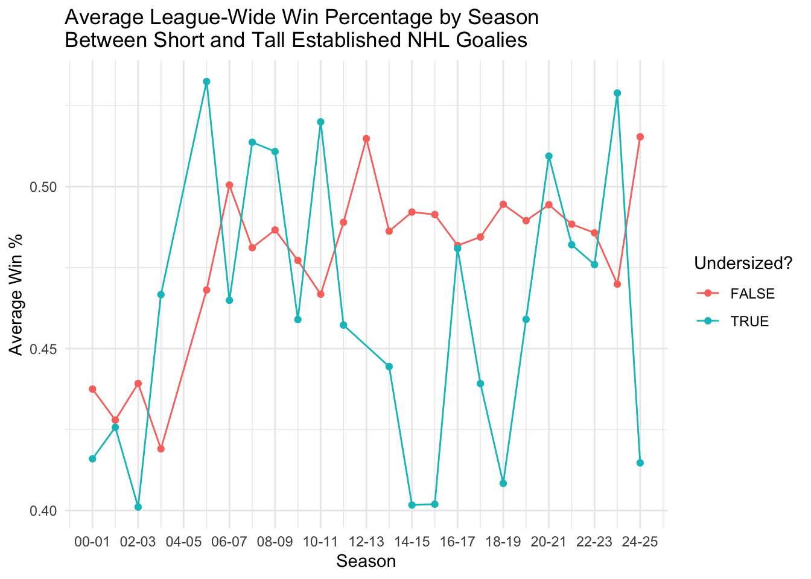
There does not appear to be any significant correlation or visual trend between being an undersized (established) goalie and having good performance statistics. The correlation coefficient between height and save percentage is 0.08. Similarly, the correlation coefficient between height and goals against average is 0.08.